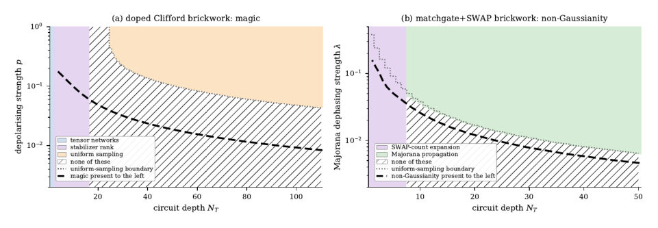
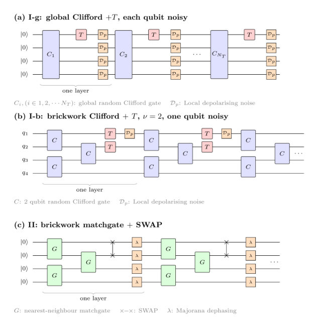
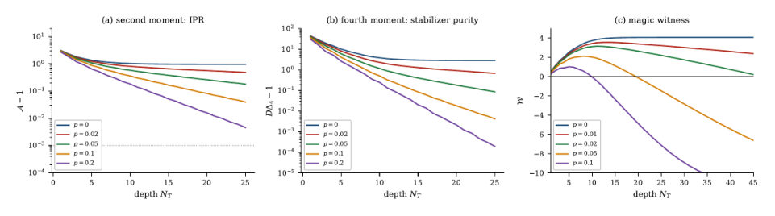

← Index · ← Previous · Next →
Authors: Anjali Waghmare, Sergii Strelchuk, Sathyawageeswar Subramanian
Type: theory · Category: quantum information and computing · PDF: https://arxiv.org/pdf/2609.39734v1
Analysis basis: full PDF text, analyzed in chunks



Summary. This paper demonstrates that in the presence of noise, standard quantum complexity diagnostics (like magic or scrambling) fail to reliably track the limits of efficient classical simulation. The separation is attributed to the fact that these diagnostics probe higher-order statistical moments than the moments relevant to the best classical simulation algorithms. This suggests that measuring such diagnostics on a noisy device is insufficient evidence for true quantum computational advantage.
Why it may be interesting. This work directly challenges the assumption that quantum complexity measures are universally reliable indicators of computational hardness, providing crucial theoretical nuance for assessing quantum advantage claims in realistic, noisy settings.
Main problem. The paper investigates whether standard quantum dynamical diagnostics (like magic or scrambling) reliably predict the limits of efficient classical simulation when quantum circuits are subjected to noise.
Main result. The diagnostics and classical simulability do not reliably track each other in noisy mixed-state circuits, as they probe different statistical moments that decay at different rates under noise.
Method. The authors compare the behavior of structural diagnostics (e.g., fourth-order moments) against the computational cost derived from best-known classical simulation algorithms (which often depend on second-order moments).
Model / system. The study analyzes noisy random quantum circuits, specifically two families: noisy Clifford+$T$ circuits and noisy matchgate circuits, subjected to local depolarizing noise.
Key observables. Magic, operator scrambling (OTOCs), anticoncentration, and fermionic non-Gaussianity are used as diagnostics, alongside the computational cost derived from classical simulation algorithms.
Important parameters / regimes. Noise strength, circuit depth, and system size ($N$) are key parameters used to map out the separation regimes.
Assumptions / limitations. The initial connection between diagnostics and simulability was established for noiseless circuits, and the analysis highlights that diagnostics measured on a noisy device do not constitute evidence for classical hardness by themselves.
Figures summary. Figure 1 summarizes the central result, showing that the boundary where the resource diagnostic becomes trivial does not coincide with the boundary separating regions of efficient classical simulation for both circuit families.
Paper structure. The paper develops the theoretical framework by analyzing the statistical moments probed by various diagnostics and comparing these to the decay rates governing the efficiency of known classical simulation techniques for the specified noisy circuit models.
Claims of quantum advantage rest on the classical hardness of simulating quantum circuits. Magic, operator scrambling, anticoncentration, and non-Gaussianity for fermionic circuits are standard diagnostics of complex quantum dynamics. For pure states, some of these have been rigorously connected to classical simulability. Whether these diagnostics reliably track the limits of efficient classical simulation under noise remains unclear. Here, we show that in noisy Clifford+$T$ and nearest-neighbour matchgate+SWAP circuits, dynamical diagnostics and classical simulability can separate in both directions. In particular, the diagnostics can remain nontrivial after classical simulation becomes efficient, or become trivial before known efficient classical algorithms apply. We trace this mismatch to the different statistical properties they probe: magic and scrambling depend on fourth-order statistics of the Pauli spectrum, whereas the simulation algorithms depend primarily on second-order moments, which local noise suppresses at different rates. Thus, dynamical diagnostics measured on a noisy quantum device do not by themselves constitute evidence for classical hardness.
Authors: Xianrui Yin, Fereshteh Ghasempour, Christian B. Mendl
Type: theory · Category: numerical methods · PDF: https://arxiv.org/pdf/2609.39176v1
Analysis basis: full PDF text, analyzed in chunks
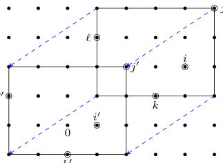
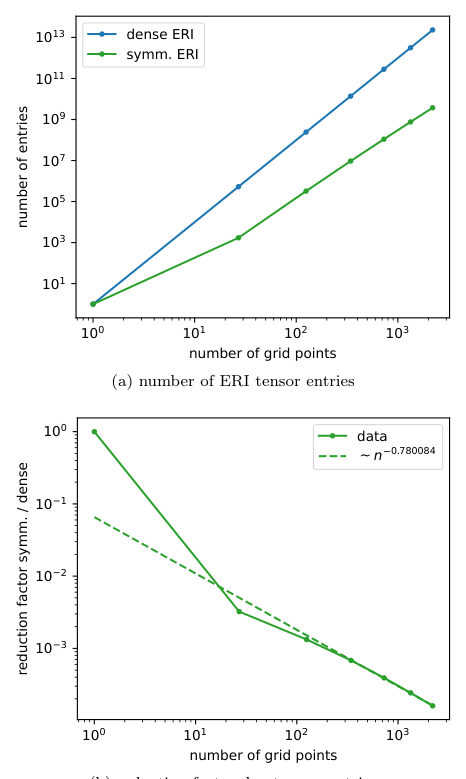
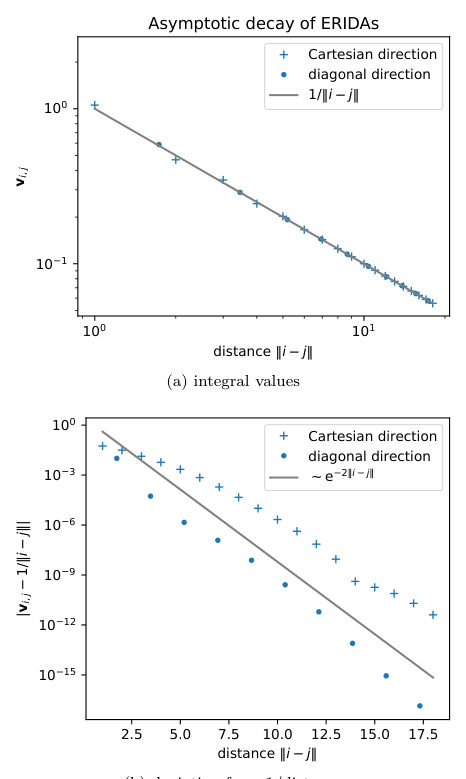
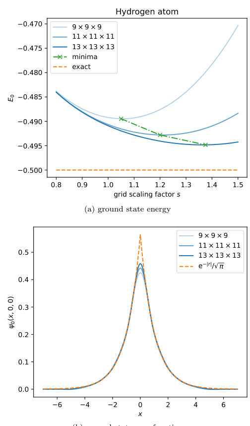
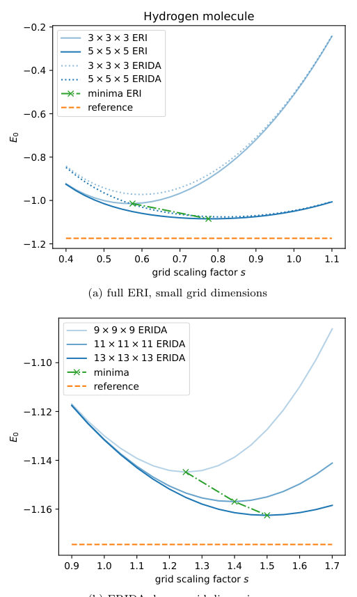
Summary. This paper presents advanced numerical algorithms for calculating electron overlap integrals required for quantum electronic structure simulations using Gausslet orbitals on a cubic lattice. By rigorously exploiting lattice symmetries, the authors achieve massive computational reductions in the number of integrals needed. This efficient methodology is demonstrated by accurately calculating the ground state energies of the hydrogen atom and molecule.
Why it may be interesting. This work provides a highly optimized, scalable computational framework for quantum chemistry calculations, which is crucial for applying advanced electronic structure methods to larger, more complex molecular or solid-state systems.
Main problem. The primary goal is developing highly efficient algorithms to compute the necessary overlap integrals (kinetic, nuclear, and electron repulsion) for electronic structure simulations using Gausslet orbitals on cubic lattices.
Main result. The authors successfully developed symmetry-exploiting algorithms that drastically reduce the number of required electron repulsion integrals on a $5 imes 5 imes 5$ grid from $244$ million to under $330$ thousand, achieving rapid computation times.
Method. The methodology relies heavily on exploiting translational, permutation, and octahedral symmetries inherent in the Gausslet basis set to systematically reorder and precompute nested summations for the various integral types.
Model / system. The work focuses on electronic structure calculations using Gausslet orbitals defined on a cubic lattice ($\mathbb{Z}^3$). Demonstrations include calculating the ground state energy of the hydrogen atom and the hydrogen molecule.
Key observables. Overlap integrals ($k_{i,j}$, $nZ_{i,j}(R)$, $(ij|k\ell)$), ground state energy ($E_0$), and the rank of the resulting wavefunction coefficient matrix.
Important parameters / regimes. The grid size (e.g., $5 imes 5 imes 5$), the truncation tolerance ($10^{-5}$), and the scaling factor ($s$) used for basis set rescaling are key parameters.
Assumptions / limitations. The primary approximations include using the Integral Diagonal Approximation (IDA) for the electron repulsion integral tensor and assuming the factorized form of the Gausslet orbitals.
Figures summary. Figures illustrate the asymptotic decay of ERIs, showing expected scaling, and show the ground state energy curves for the H atom and molecule as a function of the grid scaling factor $s$.
Paper structure. The paper first introduces the physical problem and the Gausslet basis. It then details the mathematical derivation and reorganization of the three types of overlap integrals, heavily emphasizing the symmetry reduction techniques (Algorithm 1). Finally, it applies the developed framework to benchmark calculations for the H atom and H molecule.
Gausslet orbitals on a cubic lattice, introduced in [Steven R. White, J. Chem. Phys. 147, 244102 (2017)], represent a localized, smooth, and systematically refineable basis set featuring a "diagonal" approximability of the electron repulsion integral tensor. The present work develops efficient algorithms for evaluating overlap integrals required for electronic-structure simulations using these Gausslets, specifically the kinetic, nuclear, and electron repulsion integrals (both with and without the diagonal approximation). Computational efficiency improvements rest on the exploitation of translation, permutation, and octahedral symmetries, a reordering and precomputation of nested sums, as well as an early truncation of small coefficients. Our algorithms reduce the number of electron repulsion integrals on a $5 \times 5 \times 5$ grid from $125^4 = 244140625$ to $324275$ due to symmetries, and achieve a wall-clock runtime for evaluating the remaining integrals with a truncation tolerance of $10^{-5}$ in under 2 seconds on a laptop computer. We apply the developed methodology to compute the ground state of the hydrogen atom and molecule as a demonstration.
Authors: Chaowen Guan, Akshit Katiyar
Type: theory · Category: quantum information and computing · PDF: https://arxiv.org/pdf/2609.40277v1
Analysis basis: full PDF text, analyzed in chunks
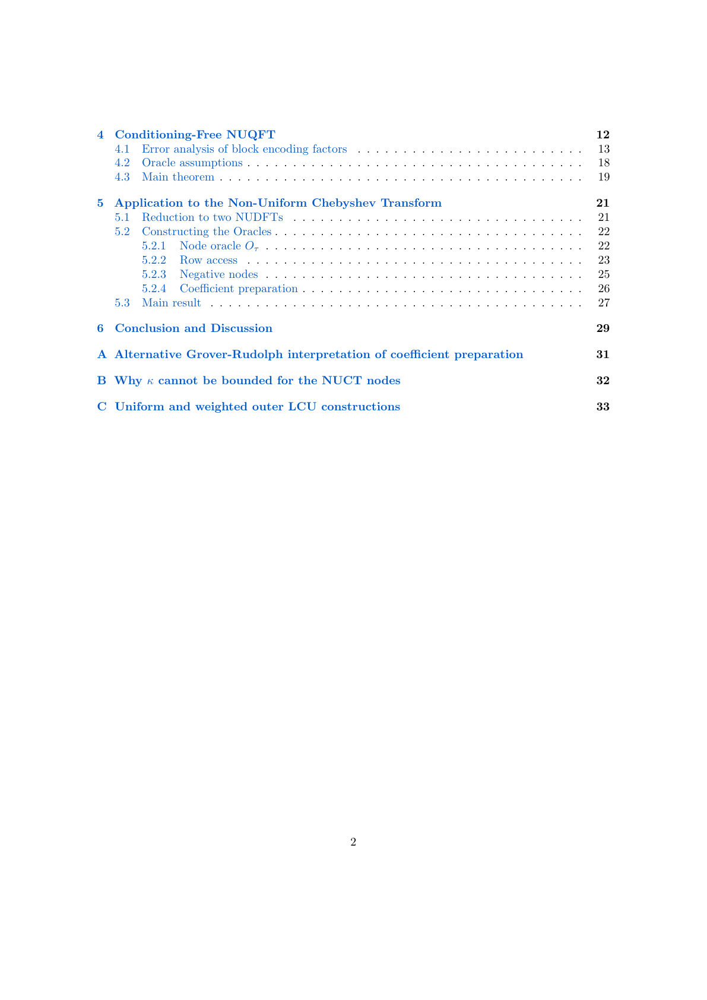
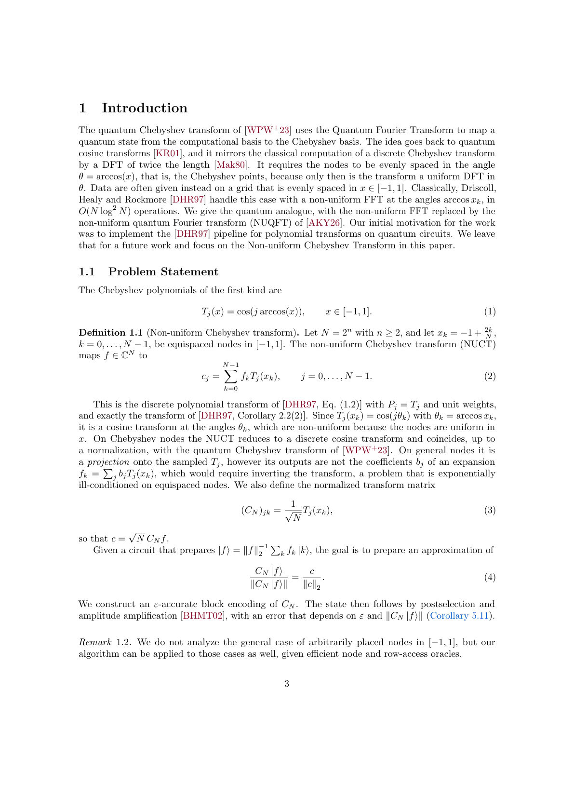
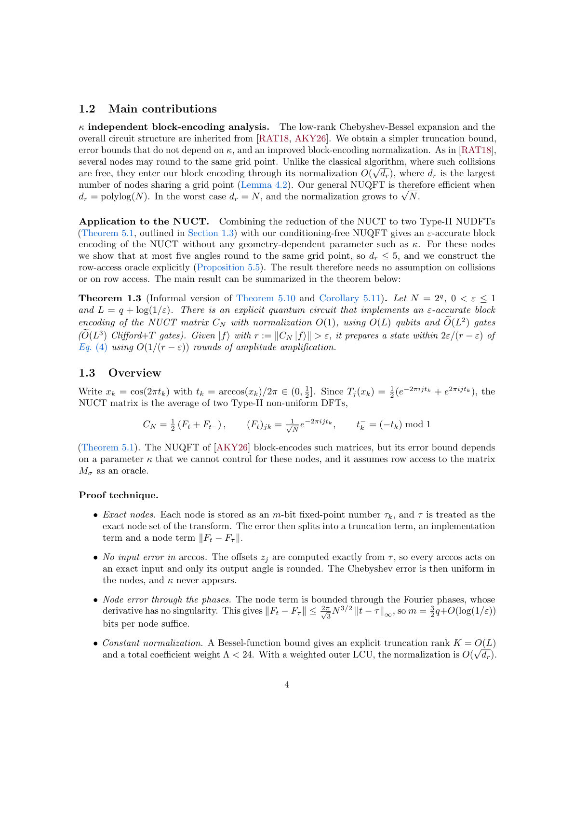
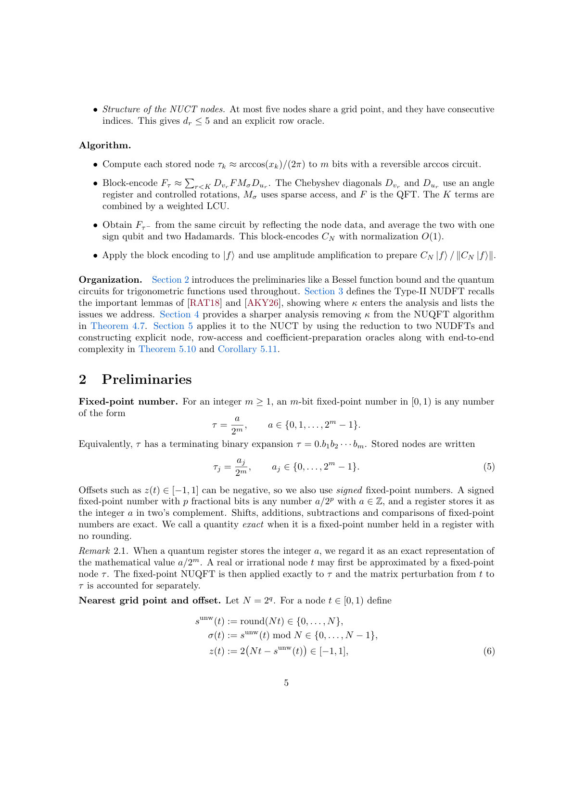
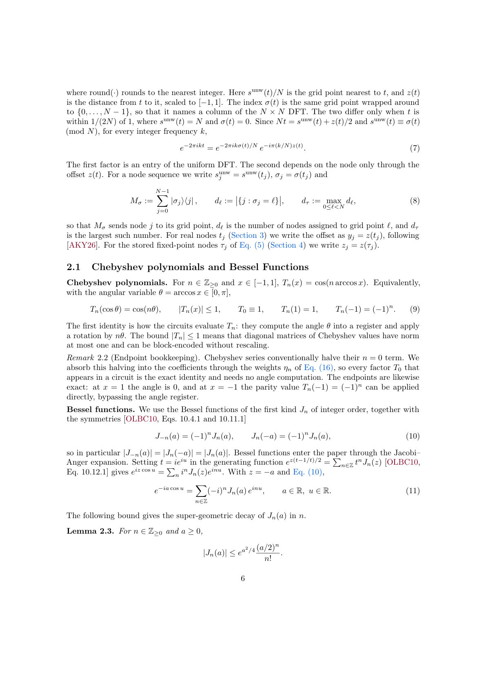
Summary. This paper presents an efficient quantum algorithm for the non-uniform Chebyshev transform (NUCT), overcoming limitations in previous quantum Fourier transform methods. By constructing a 'conditioning-free' NUQFT, the authors achieve a polylogarithmic gate complexity circuit for the NUCT. This advancement is significant for quantum simulation tasks requiring high-precision spectral analysis.
Why it may be interesting. This work provides a concrete, resource-efficient quantum circuit implementation for a mathematically important transform (Chebyshev) that is critical in quantum simulation and spectral analysis, advancing the field of quantum signal processing.
Main problem. Developing an efficient quantum algorithm for the non-uniform Chebyshev transform (NUCT), which is difficult because its sampling nodes are non-uniform in the angle $ heta$.
Main result. The authors provide an $\epsilon$-accurate block encoding of the NUCT matrix using $O(L)$ qubits and $\widetilde O(L^2)$ gates, where $L = \log N + \log(1/\epsilon)$, crucially removing dependence on geometry-dependent parameters from prior work.
Method. The NUCT is related to the average of two Type-II non-uniform DFTs, which are implemented using an improved, 'conditioning-free' Non-uniform Quantum Fourier Transform (NUQFT) circuit.
Model / system. The model involves quantum registers storing fixed-point numbers used to compute the transform coefficients based on Chebyshev polynomials sampled at specific nodes $x_k$.
Key observables. The output state fidelity and the circuit complexity in terms of qubits and gates.
Important parameters / regimes. The precision $\epsilon$, the transform size $N$, and the derived complexity parameter $L = \log N + \log(1/\epsilon)$.
Assumptions / limitations. The analysis relies on the explicit construction of oracles for node and row access, and the equivalence of the NUCT to two Type-II NUDFTs.
Figures summary. Not specified.
Paper structure. The paper progresses by first establishing the NUCT problem, improving the general NUQFT by removing $\kappa$ dependence, and finally applying this improved transform to construct the full NUCT circuit.
We present an efficient quantum algorithm for the non-uniform Chebyshev transform. It is defined as the projection of a function onto Chebyshev polynomials sampled at given nodes that are uniform in $x\in[-1,1]$, and hence non-uniform in the angle $θ=\arccos x$, a setting that QFT-based quantum Chebyshev transforms cannot handle. Our construction is based on an improvement of an existing Non-uniform Quantum Fourier Transform (NUQFT) whereby we remove the conditioning from non-uniform node sampling. Hence, error bounds are independent of the geometry-dependent parameter $κ$ of prior work. We use the fact that Chebyshev transform matrix is the average of two Type-II non-uniform DFTs, which we implement with a single controlled NUQFT circuit. We provide explicit oracle constructions, including the row-access oracle previously left as an assumption. The resulting $\varepsilon$-accurate block encoding has $O(1)$ normalization and uses $O(L)$ qubits and $\widetilde O(L^2)$ gates, where $L=\log N+\log(1/\varepsilon)$. We give an end-to-end implementation with complexity analysis, including the success probability and output-state error.
Authors: Alexander Meiburg
Type: theory · Category: quantum information and computing · PDF: https://arxiv.org/pdf/2609.38996v1
Analysis basis: full PDF text, analyzed in chunks
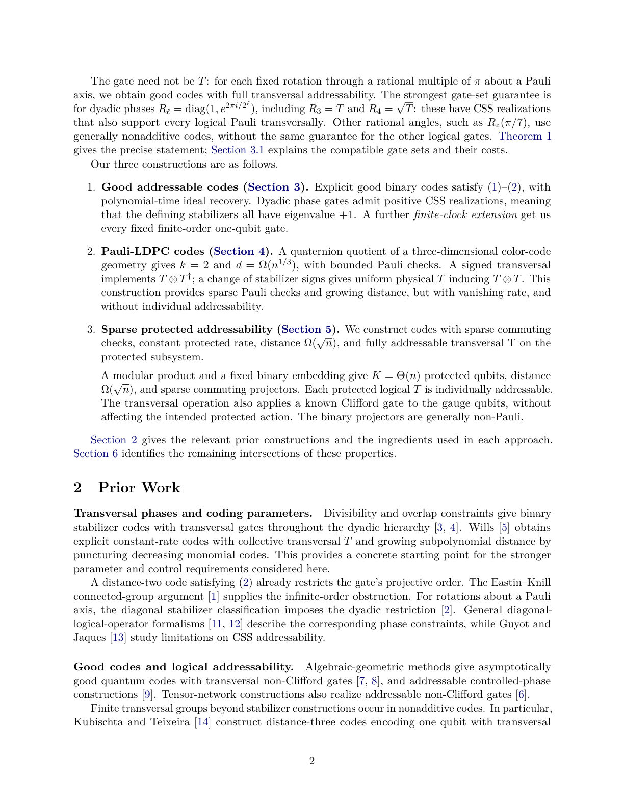
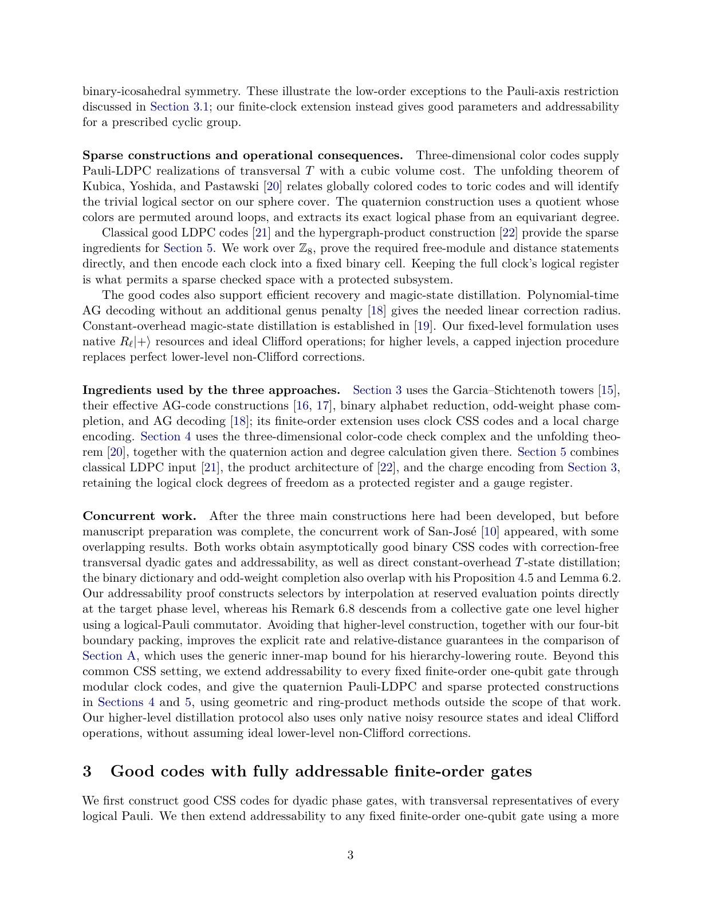
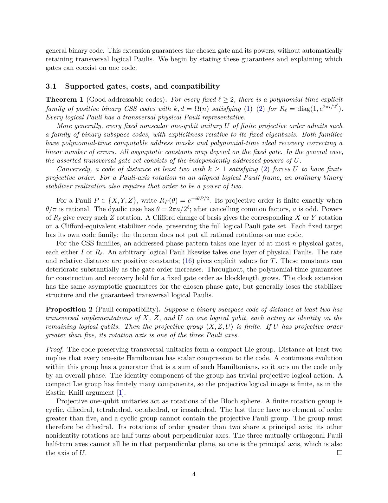
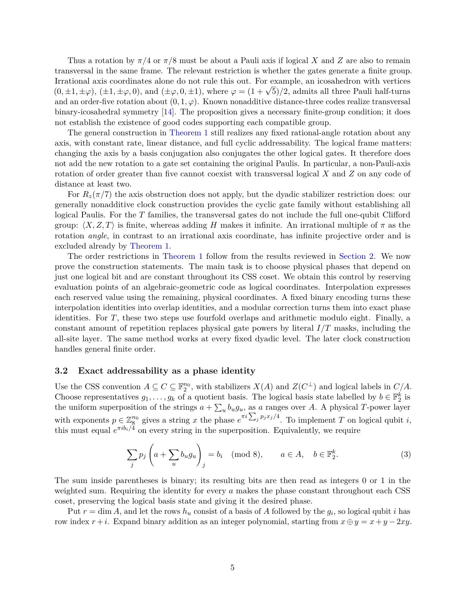
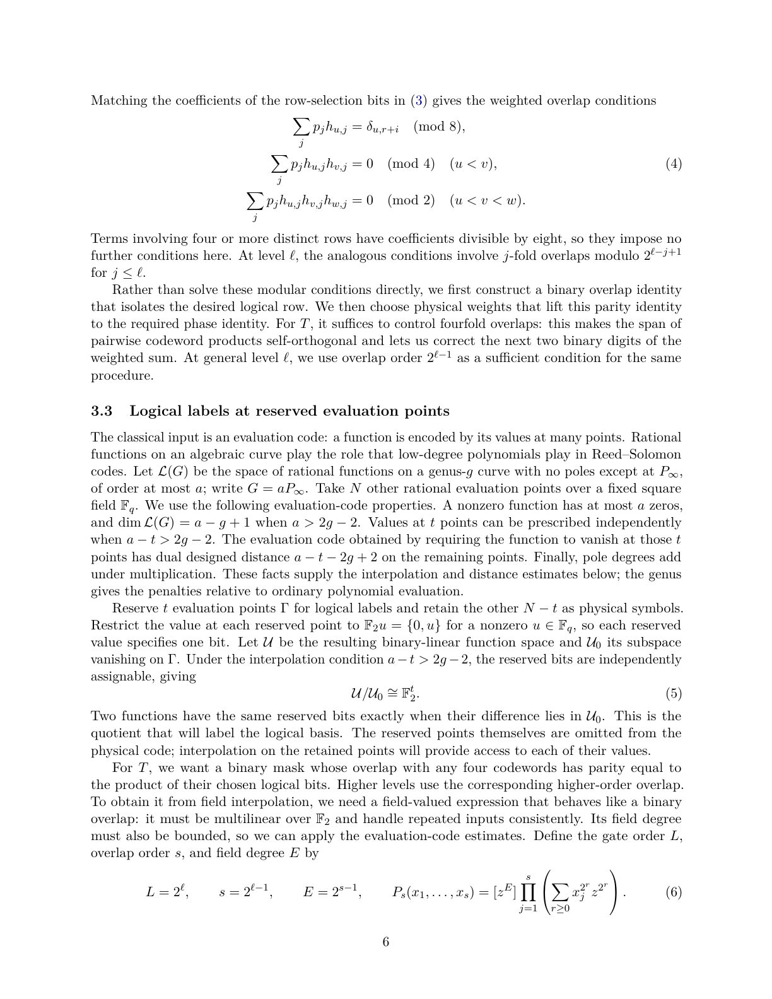
Summary. This paper develops advanced theoretical constructions for quantum error-correcting codes, focusing on achieving constant rate while supporting fully addressable transversal gates like the T gate. By combining algebraic geometry and coding theory, the authors establish new bounds on code performance and address the critical challenge of implementing arbitrary logical gates fault-tolerantly.
Why it may be interesting. This work directly addresses the fundamental limitations in fault-tolerant quantum computation by providing explicit constructions for high-performance quantum codes with necessary gate symmetries.
Main problem. The paper aims to construct quantum error-correcting codes (specifically CSS codes) that possess constant rate, fully addressable transversal gates (like the T gate), and maintain good asymptotic parameters.
Main result. The authors construct asymptotically good CSS codes with fully addressable transversal T gates, and also provide constructions for sparse protected subsystems and Pauli-LDPC codes with transversal T.
Method. The work employs advanced techniques from algebraic geometry (e.g., rational functions on curves) and coding theory to enforce specific phase identities required for transversal gate implementation.
Model / system. The model is quantum error correction, focusing on stabilizer codes and CSS codes defined over binary subspaces. The physical system involves encoding logical qubits into physical qubits to protect against errors while allowing selective gate operations.
Key observables. Code parameters include rate, distance ($d$), and the ability to realize specific logical gates (e.g., transversal T gate).
Important parameters / regimes. Key parameters include the code rate, the distance scaling ($\Omega(n)$ or $\Omega(\sqrt{n})$), and the gate order ($\ell$) for the implemented gates.
Assumptions / limitations. The general case for arbitrary rational rotations requires the use of nonadditive codes, and the construction of Pauli-LDPC codes with fully addressable non-Clifford gates remains an open challenge.
Figures summary. Not specified in the notes.
Paper structure. The paper progresses by first establishing constructions for fully addressable transversal T gates in CSS codes, then detailing the use of algebraic geometry to enforce necessary phase identities, and finally presenting concrete constructions for sparse protected subsystems and distance lower bounds.
Recent work by Wills constructed codes with constant rate and transversal $T$. Extending this line of work, we construct asymptotically good CSS codes with \textbf{fully addressable} transversal $T$, permitting selective control over which logical qubits receive a $T$ gate. We also give Pauli-LDPC codes with transversal $T$ and growing distance at vanishing rate; and a protected-subsystem construction with fully addressable transversal $T$, constant protected rate, distance $Ω(\sqrt n)$, and sparse (non-Pauli) checks. More generally, we obtain asymptotically good binary codes with full transversal addressability for every fixed finite-order one-qubit gate, retaining CSS realizations for dyadic phase gates such as $\sqrt T$ and using generally nonadditive codes for rotations such as $R_z(π/7)$. The remaining challenge is to construct asymptotically good Pauli-LDPC codes with fully addressable transversal non-Clifford one-qubit gates.
Authors: Louis Golowich, Venkatesan Guruswami
Type: theory · Category: quantum information and computing · PDF: https://arxiv.org/pdf/2609.39345v1
Analysis basis: full PDF text, analyzed in chunks
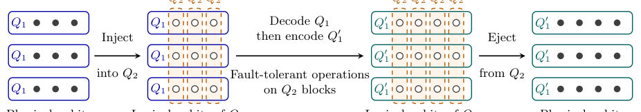
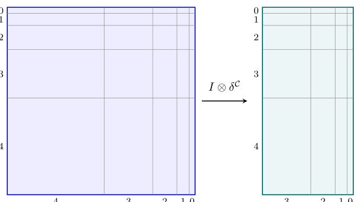
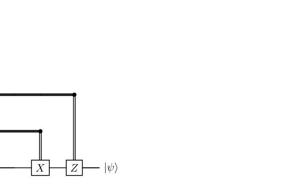
Summary. This paper introduces a groundbreaking fault-tolerant scheme for quantum error correction that solves the problem of injecting and ejecting quantum states between physical qubits and encoded code blocks. By achieving constant space and time overhead, it significantly improves the feasibility of building large-scale quantum processors. The methodology relies on advanced code constructions using hypergraph products and rigorous gadget analysis.
Why it may be interesting. This work provides concrete, resource-efficient protocols for interfacing physical qubits with logical quantum memory, which is a critical bottleneck for scaling up quantum computation architectures.
Main problem. The primary goal is to construct a fault-tolerant method for injecting bare physical qubits into quantum error-correcting codes and subsequently ejecting encoded states back into physical qubits.
Main result. The authors present the first known fault-tolerant scheme achieving this injection/ejection with constant space and time overhead, succeeding under locally stochastic noise.
Method. The construction utilizes high-dimensional hypergraph products of classical LDPC codes, which are then concatenated to achieve resilience against uniform noise. Fault-tolerance is maintained via specialized 'gadgets' implemented with constant circuit depth.
Model / system. The system involves quantum error-correcting codes, specifically built using hypergraph products of classical LDPC codes derived from linear-time-encodable codes. The analysis is performed under the model of circuit-level locally stochastic noise.
Key observables. Logical error probability (bounded by a small constant for injection/ejection), constant space and time overhead ($O(1)$ depth).
Important parameters / regimes. The physical qubit count grows linearly with the number of logical qubits; the scheme assumes the ability to run polynomial-sized noiseless classical circuits.
Assumptions / limitations. The scheme assumes the availability of noiseless classical side-computations and that the physical qubits are exposed to a constant noise rate.
Figures summary. Figure 1 illustrates the process of code switching, showing the flow from one code block ($Q_1$) through an intermediate fault-tolerant block ($Q_2$) to an output block ($Q'_1$) using injection and ejection.
Paper structure. The paper follows a structure moving from motivation to technical overview, defining preliminaries, detailing the code construction via hypergraph products, presenting the decoder, and finally detailing the fault-tolerant gadgets and their rigorous proof of operation.
We construct the first known fault-tolerant scheme for injecting states into quantum error-correcting codes with constant space and time overhead. That is, we construct a family of constant-rate quantum error-correcting codes for which a set of bare physical qubits can be injected, i.e. fault-tolerantly encoded, into a code block. Similarly, a code state can be ejected, i.e. fault-tolerantly decoded, back into bare physical qubits. We show that these injection and ejection procedures succeed under circuit-level locally stochastic noise, while incurring just a small constant probability of corrupting each qubit, which is unavoidable for bare physical qubits. We also show how to perform fault-tolerant error correction and code-state preparation under locally stochastic noise. All of our gadgets can be implemented with constant quantum circuit depth (i.e. are single-shot), and with a number of physical qubits growing linearly with the number of logical qubits, assuming the ability to run polynomial-sized noiseless classical circuits on the side. We construct our quantum codes by taking a high-dimensional hypergraph product of classical LDPC codes, which in turn are a simplified version of Spielman's linear-time encodable codes (STOC'95). As our resulting product codes are only resilient to physical errors occurring with non-uniform probabilities across qubits, we then show how to concatenate with inner codes of various sizes to obtain fault-tolerance against uniform noise.
Authors: Fatih E. Bilgen, Ozgur B. Akan
Type: theory · Category: quantum information and computing · PDF: https://arxiv.org/pdf/2609.39851v1
Analysis basis: full PDF text, analyzed in chunks
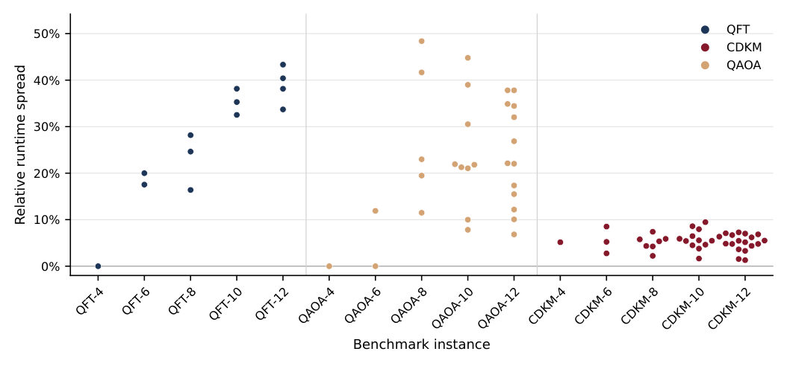
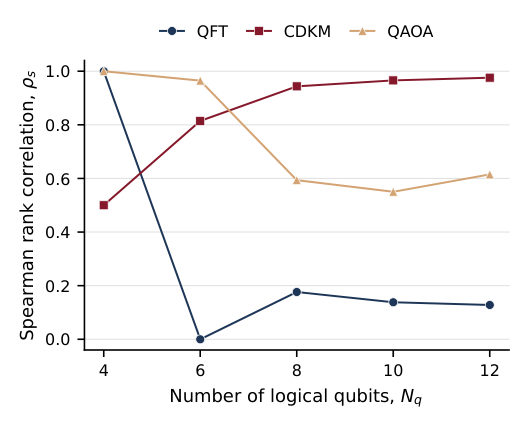
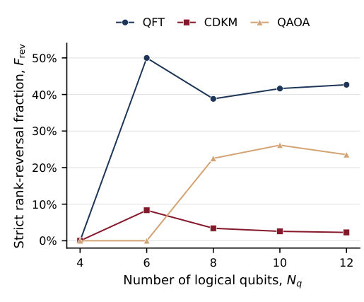
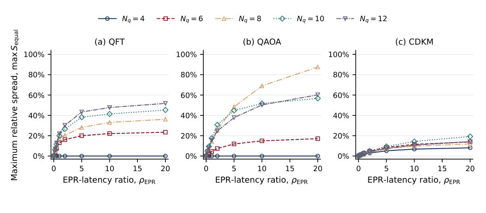
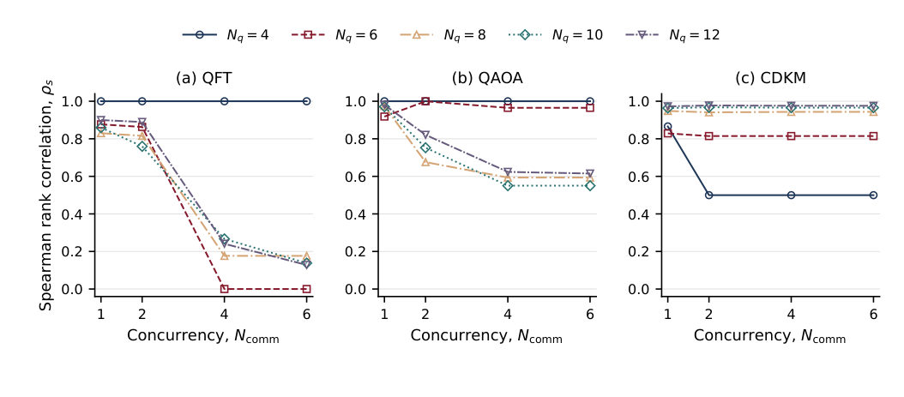
Summary. This paper rigorously tests the assumption that minimizing the required EPR pair count is equivalent to minimizing the runtime in distributed quantum computing. By analyzing several benchmark circuits under varying communication conditions, the authors demonstrate that the two metrics are distinct, showing that minimum-EPR mappings can be suboptimal and that runtime differences are highly sensitive to communication latency and concurrency.
Why it may be interesting. This work is highly relevant as it provides critical theoretical constraints on resource estimation in large-scale quantum computation, guiding the development of more accurate compilation and scheduling tools for quantum hardware.
Main problem. The paper investigates whether the count of required EPR pairs (EPR cost) is a reliable proxy for the actual execution time in distributed quantum computing.
Main result. EPR cost and execution time are distinct optimization objectives; minimizing EPR cost does not guarantee minimum runtime, and the reliability of the proxy depends strongly on the specific quantum workload and communication operating regime.
Method. The authors systematically evaluate mappings of benchmark quantum circuits (QFT, QAOA, CDKM) onto two Quantum Processing Units (QPUs) by comparing the minimum EPR cost against the calculated distributed execution time under various concurrency models.
Model / system. The model simulates Distributed Quantum Computing (DQC) executing circuits across two interconnected QPUs. The complexity is analyzed by mapping circuits and calculating both the entanglement demand (EPR cost) and the runtime based on circuit dependencies (DAG scheduling).
Key observables. EPR Cost (CEPR), Distributed Execution Time (T_dist), Spearman's rank correlation ($ ho_s$), Strict Rank Reversal Fraction (Frev), and Runtime Regret.
Important parameters / regimes. Circuit size ($N_q \in \{4, 6, 8, 10, 12\}$), EPR-generation latency ($ ho_{ ext{EPR}}$), and communication concurrency limit ($N_{ ext{comm}}$).
Assumptions / limitations. The analysis assumes a baseline model where one EPR pair is consumed per non-local operation, ignoring entanglement reuse or advanced teleportation techniques.
Figures summary. Figures illustrate the variation of the Strict Rank Reversal Fraction (Frev) across different circuits and qubit numbers, and show how the maximum runtime spread among equal-EPR mappings increases with EPR-generation latency.
Paper structure. The paper establishes the problem by comparing EPR cost to runtime across three benchmark circuits (QFT, QAOA, CDKM). It then systematically analyzes the relationship by varying communication latency and concurrency, concluding that explicit communication-aware runtime modeling is necessary.
EPR-pair consumption is commonly used as a communication-cost objective in distributed quantum computing, but minimizing EPR cost does not necessarily minimize distributed execution time. Despite its widespread use, the reliability of EPR count as a runtime surrogate has received limited direct characterization across different workloads and communication conditions. This work addresses this gap by systematically evaluating the relationship between EPR cost and runtime over all balanced two-QPU mappings of QFT, QAOA, and CDKM circuits. The results show that mappings with identical EPR cost can have substantially different execution times, lower-EPR mappings can be slower, and minimum-EPR mappings can be runtime-suboptimal. The reliability of EPR count is strongly workload dependent and also changes with the communication operating regime: increasing EPR-generation latency amplifies runtime differences hidden by equal EPR cost, while increased communication concurrency can reduce the ability of EPR count to preserve runtime ordering. These results show that EPR count and execution time are related but distinct optimization objectives, and identify regimes in which explicit communication-aware runtime modeling is necessary.
Authors: Yonglong Li
Type: theory · Category: quantum information and computing · PDF: https://arxiv.org/pdf/2609.40061v1
Analysis basis: full PDF text, analyzed in chunks
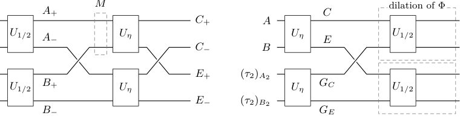
Summary. This paper rigorously characterizes the equality conditions for the bosonic quantum entropy power inequality (qEPI) for independent inputs. It proves that saturation of this inequality requires the input quantum states to be Gaussian and possess identical covariance matrices. The methodology combines advanced techniques from quantum information theory, including doubling constructions and the quantum Darmois–Skitovich theorem.
Why it may be interesting. This work provides a rigorous characterization of when fundamental entropy bounds are saturated in bosonic systems, linking information-theoretic inequalities directly to the Gaussian nature of the underlying quantum states, which is crucial for understanding quantum channels.
Main problem. The paper aims to determine the complete equality class for the bosonic quantum entropy power inequality (qEPI) for independent input states.
Main result. Equality in the qEPI (both linear and exponential forms) holds if and only if the input bosonic states are Gaussian and share the same covariance matrix.
Method. The proof uses a 'doubling construction' involving thermal auxiliary states, leading to an injectivity argument that forces the inputs to be product states, followed by applying the quantum Darmois–Skitovich theorem to establish Gaussianity.
Model / system. The system involves bosonic quantum modes (m-mode) interacting via a beam splitter with transmissivity $\eta$ ($0 < \eta < 1$), analyzing the relationship between input and output entropies.
Key observables. Von Neumann entropy ($S$), quantum relative entropy ($D$), and the entropy power inequality itself.
Important parameters / regimes. Transmissivity $\eta$ ($0 < \eta < 1$), finite mean photon number, and the covariance matrix of the input states.
Assumptions / limitations. The inputs $\rho_A, \rho_B$ are assumed to be independent, finite-energy $m$-mode states.
Figures summary. Figure 1 illustrates the 'doubled circuit' setup using beam splitters and auxiliary thermal states to facilitate the proof.
Paper structure. The paper develops the proof by first analyzing the vanishing of entropy deficits ($L_C=0$ and $L_E=0$) via a doubling construction, which implies output independence. This leads to Gaussianity via the quantum Darmois–Skitovich theorem, and finally, a central-limit argument equates the exponential and linear forms.
The bosonic quantum entropy power inequality bounds the entropy of a beam-splitter output in terms of the input entropies. We determine its complete equality class among independent inputs of finite mean photon number: for any number of modes and any transmissivity strictly between zero and one, equality in either the linear or the exponential form holds if and only if the inputs are Gaussian with the same covariance matrix, allowing arbitrary displacements. The main step shows that equality for one output forces the two outputs to be independent: a thermal auxiliary converts equality into preservation of mutual information by a fixed noisy channel, and a two-outcome instrument shows that preservation of mutual information requires a product state with the reference. The quantum Darmois--Skitovich theorem then gives Gaussianity, while a central-limit argument reduces exponential equality to linear equality.
Authors: Owen Friedewald, Ali Shiri Sichani, Chi-Ren Shyu
Type: theory · Category: quantum information and computing · PDF: https://arxiv.org/pdf/2609.38734v1
Analysis basis: full PDF text, analyzed in chunks
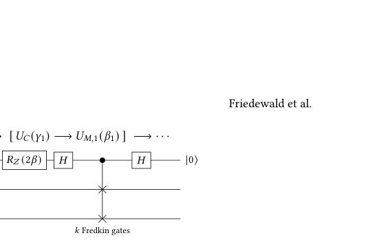
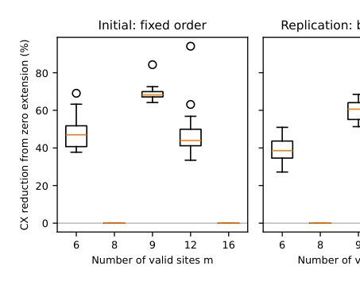
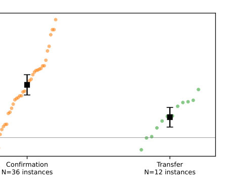
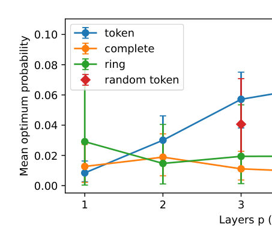
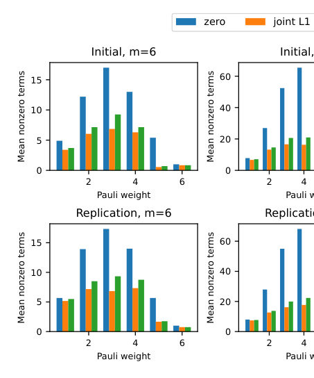
Summary. This paper develops a method called 'exact diagonal completion' to simplify quantum circuits used in QAOA for placement problems by optimizing unused diagonal operator entries. Using weighted-$\ell_1$ optimization, the authors significantly reduced gate counts in simulations, demonstrating a powerful tool for quantum circuit compilation. However, the study concludes that while the circuit optimization is effective, it does not translate into a clear, end-to-end quantum advantage over classical solvers.
Why it may be interesting. While focused on quantum computation, the techniques for optimizing circuit structure via linear programming and sparse recurrence relations are mathematically rich and could inspire novel circuit optimization techniques applicable to other quantum information problems.
Main problem. The paper investigates optimizing quantum circuits by performing 'exact diagonal completion' on unreachable subspaces, specifically applying this to the Quantum Approximate Optimization Algorithm (QAOA) for placement problems.
Main result. Weighted-$\ell_1$ completion successfully reduced Controlled-NOT (CX) counts in many tested geometries, though no end-to-end advantage was established over classical search methods in full integration.
Method. The authors construct exact Manhattan-distance operators using weighted-$\ell_1$ linear programming and a sparse recurrence relation to simplify the required quantum cost phases.
Model / system. The model involves quantum circuits used for solving placement problems, utilizing token permutation encoding and distance phases derived from weighted pairwise nets. The state preparation involves sequences of unitary operators.
Key observables. Controlled-NOT (CX) gate counts, circuit depth, and percentage reduction in gate counts compared to alternative circuit extensions.
Important parameters / regimes. The number of sites (e.g., 6, 9, or 12 sites) and the structure of the underlying geometry (e.g., 160 geometries tested).
Assumptions / limitations. The primary assumption is that optimizing unspecified diagonal entries on unreachable states does not alter the ideal computation, and the structured completion methods provide exact results for certain coordinate systems.
Figures summary. Figure 1 illustrates the prepared token circuit and the gate-level expansion of its mixer block using controlled register swaps. Other figures likely compare gate counts or circuit structures across different encoding methods.
Paper structure. The paper progresses by defining the problem (QAOA placement), developing the mathematical tools (weighted-$\ell_1$ completion, sparse recurrence), demonstrating the technique's efficacy through multiple simulations (160 geometries, 60-case cohort), and concluding with an integration study (OpenROAD) showing feasibility but limited quantum advantage.
Unused encoding states offer opportunities to simplify quantum circuits. For algorithms restricted to reachable subspaces, unspecified diagonal-operator entries can be optimized without changing ideal computation. We investigate exact diagonal completion for the quantum approximate optimization algorithm (QAOA) applied to placement, using permutation-preserving register swaps. We construct exact Manhattan-distance operators through weighted-$\ell_1$ optimization of Walsh coefficients and a sparse recurrence requiring $O(\sqrt{m})$ terms on balanced rectangles, avoiding $O(m^4)$ dense constraint storage. Across 160 geometries, weighted-$\ell_1$ completion reduces controlled-NOT (CX) counts relative to four alternative extensions in all 96 cases with unused binary codes under Gray-code synthesis. On an independently specified 60-case cohort, median reductions relative to virtual-coordinate extension are 28.0\%, 53.9\%, and 21.6\% at six, nine, and twelve sites. Under generic diagonal synthesis, reductions decrease to 10.9\%, 1.3\%, and 0.7\%, demonstrating compiler dependence. Additional ancillas reduce mixer serialization, but token circuits remain deeper than one-hot baselines. Ideal placement simulations show baseline-dependent solution quality, with classical search performing better. OpenROAD integration takes 72 QAOA and 216 classical placements across six RTL designs through clock-tree synthesis and global routing with zero overflow. Completion improves phase construction; no end-to-end advantage is established.
Authors: Bin Cheng, Feng Pan
Type: theory · Category: quantum information and computing · PDF: https://arxiv.org/pdf/2609.39556v1
Analysis basis: full PDF text, analyzed in chunks
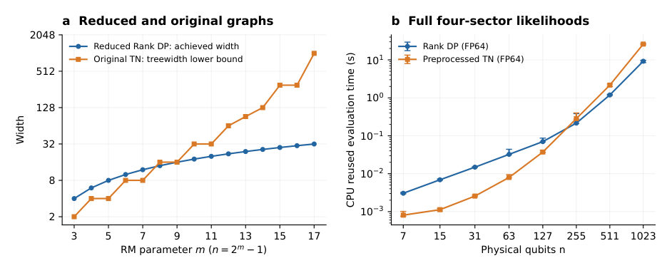
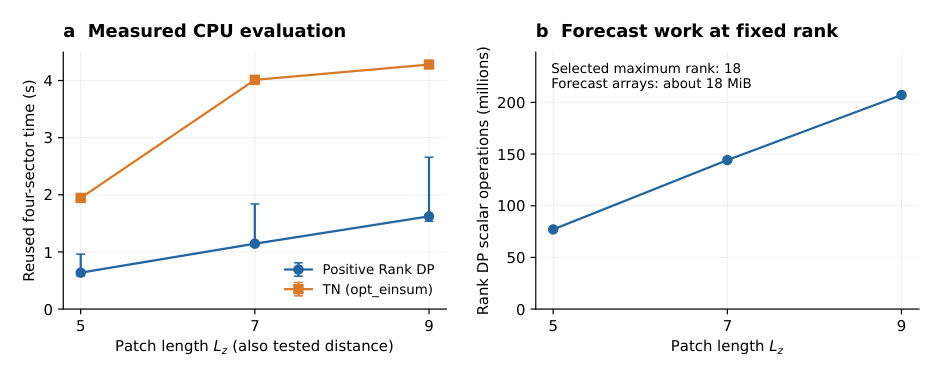
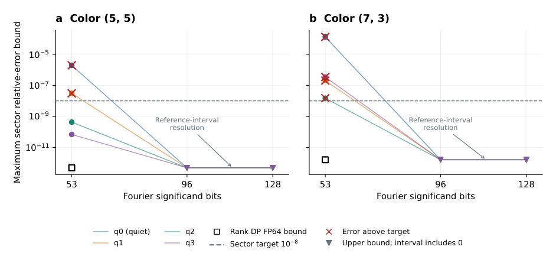
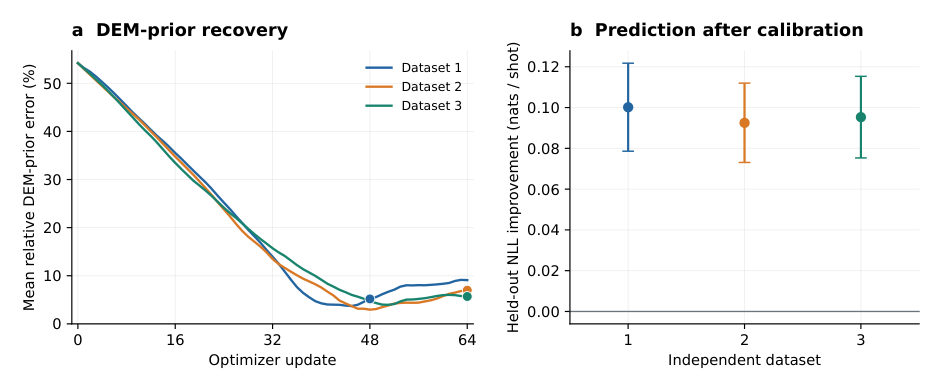
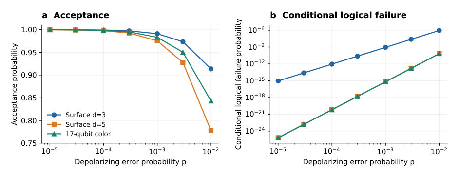
Summary. This paper presents a novel decoding algorithm, Rank-Decomposition Dynamic Programming (Rank DP), to calculate exact maximum-likelihood probabilities for quantum error correction. By exploiting the algebraic structure of the problem, it bypasses the exponential time complexity associated with standard tensor network contractions based on treewidth. This breakthrough allows for polynomial-time decoding for several important quantum codes, significantly advancing the field of quantum noise characterization.
Why it may be interesting. It provides a powerful algebraic tool (Rank DP) to tackle classically hard problems in quantum information theory, offering a path to simulating quantum error correction performance beyond the limits of standard tensor network contraction methods.
Main problem. The core challenge is computing the exact maximum-likelihood decoding probabilities for quantum error correction codes, which is computationally intractable due to exponential scaling with the treewidth of the associated tensor network.
Main result. The authors introduce Rank-Decomposition Dynamic Programming (Rank DP), an algorithm that evaluates the decoding partition function in time exponential only in the rank-width, which is superior to the standard treewidth-based contraction.
Method. The method reformulates the decoding problem as evaluating a partition function expressed as a quadratic sum of powers (SOPs) and applies Rank DP, which leverages the algebraic structure related to the rank-width of the Tanner graph.
Model / system. The work analyzes quantum error correction under stochastic Pauli noise, focusing on stabilizer codes like Reed-Muller and Steane-concatenated families. The complexity is analyzed using graph parameters like treewidth and rank-width.
Key observables. Decoding likelihoods (partition functions), conditional failure probabilities, and the comparison between computational complexities derived from rank-width versus treewidth.
Important parameters / regimes. The rank-width ($ ext{rw}$) of the Tanner graph, the noise model (stochastic Pauli noise), and the size of the code (e.g., up to 1,023 qubits for RM codes).
Assumptions / limitations. The approach assumes independent local fault factors for the Rank DP formulation, and the complexity bounds are derived within an arithmetic model.
Figures summary. The notes do not detail specific figures, but mention tables comparing failure probabilities and numerical enclosures for various codes and error rates.
Paper structure. The paper develops by first establishing the difficulty of exact MLD via TN contraction, then introducing the Rank DP framework by mapping the problem to SOPs, proving the complexity improvement using rank-width, and finally demonstrating its application to specific quantum codes.
Maximum-likelihood decoding provides an optimal decoding strategy for quantum error correction under stochastic Pauli noise. However, computing logical-class probabilities is challenging, and the leading exact tensor-network contraction requires time exponential in treewidth. In this work, we introduce a new decoding algorithm based on rank-decomposition dynamic programming (Rank DP). We express decoding partition functions with independent local fault factors as quadratic sums of powers and apply Rank DP. The resulting exact evaluator has arithmetic complexity polynomial in the input size and exponential in the Tanner graph's rank-width with respect to the fault partition, including decomposition construction. After Gaussian elimination, it gives polynomial-time decoding for punctured quantum Reed-Muller codes and a Steane-concatenated family with growing distance under independent single-qubit Pauli noise. Standard contraction of the corresponding tensor networks requires superpolynomial time. A nonnegative realization gives relative floating-point error bounds under explicit arithmetic assumptions. Numerical experiments demonstrate runtime advantages over the tested tensor-network implementations on selected code-capacity and circuit-level instances, with full likelihood evaluation for Reed-Muller codes up to $1{,}023$ qubits. We further use these likelihoods to learn circuit noise parameters from syndromes, evaluate rare postselection probabilities, and quantify decoder optimality gaps. Our work opens new avenues for exploiting algebraic structure in quantum decoding and noise characterization.
Authors: Ziyuan Dong, Xiang Fan
Type: theory · Category: quantum information and computing · PDF: https://arxiv.org/pdf/2609.40164v1
Analysis basis: full PDF text, analyzed in chunks
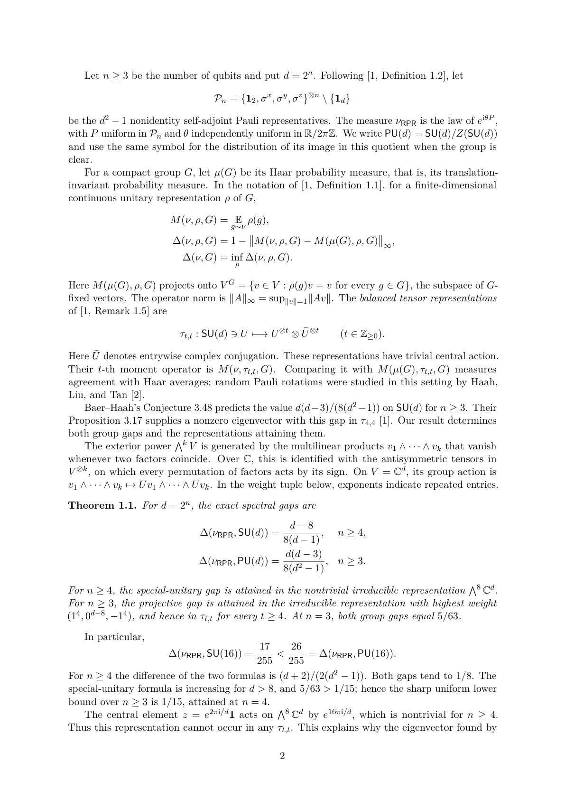
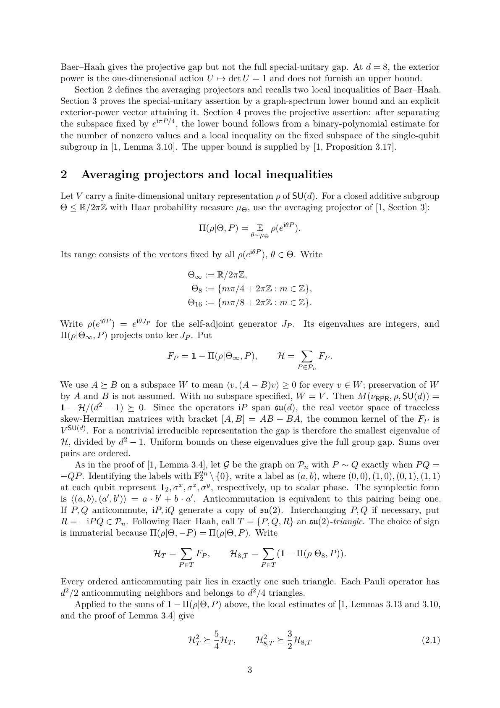
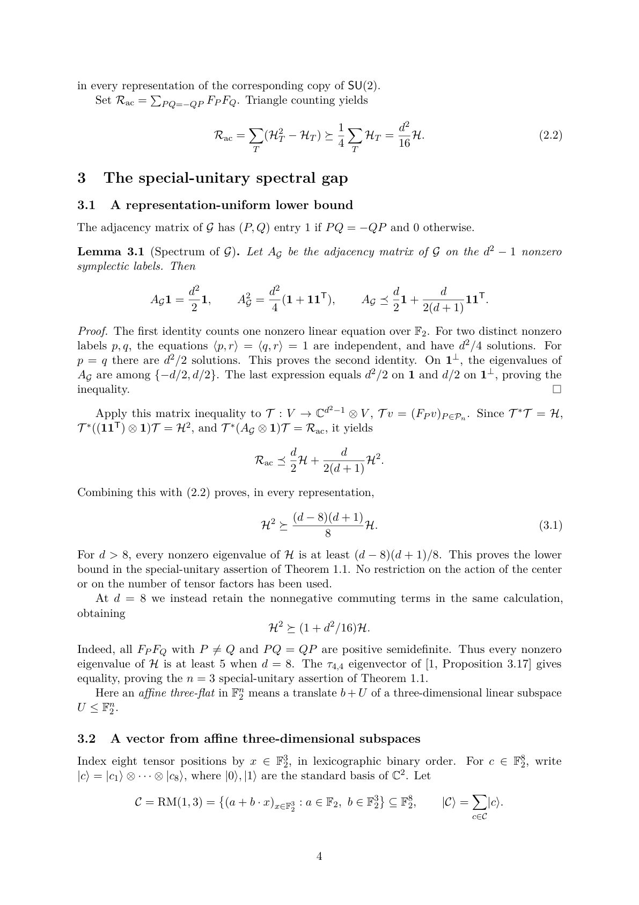
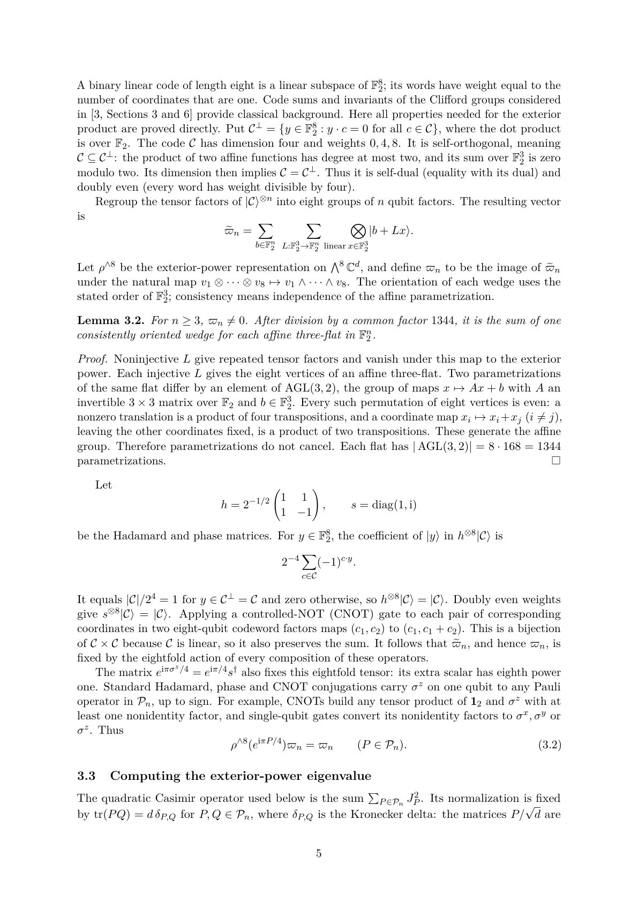
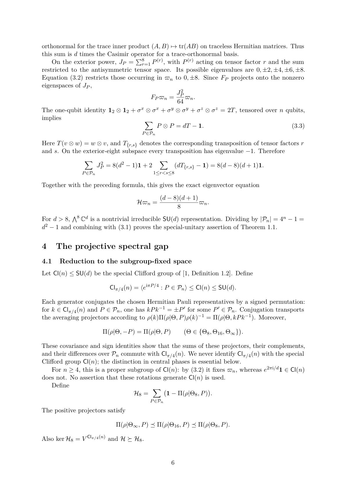
Summary. This paper provides exact formulas for the spectral gaps associated with random Pauli rotations on both the special unitary group SU(d) and the projective unitary group PU(d). By combining graph theory, polynomial bounds, and representation theory, the authors disprove previous conjectures and establish rigorous bounds for quantum mixing processes.
Why it may be interesting. The precise determination of spectral gaps for random quantum circuits is crucial for understanding quantum error correction codes and the mixing time of quantum walks on quantum state spaces.
Main problem. The paper resolves the spectral-gap problem for random Pauli rotations acting on the special unitary group SU(d) and the projective unitary group PU(d).
Main result. The exact spectral gap on SU(d) for n>=4 is found to be (d-8)/(8(d-1)), while the gap on PU(d) is shown to be d(d-3)/(8(d^2-1)).
Method. The analysis combines graph spectrum bounds from anticommuting Pauli operators, minimum-weight bounds for binary polynomials, and local inequalities on single-qubit subspaces.
Model / system. The model involves quantum evolution governed by random Pauli rotations, where the step is $e^{i heta P}$, acting on a $d=2^n$ dimensional Hilbert space.
Key observables. The spectral gap $\Delta$, which measures the separation between the ground state energy and the first excited state energy.
Important parameters / regimes. The number of qubits $n$ (with regimes $n\ge3$ or $n\ge4$) and the dimension $d=2^n$.
Assumptions / limitations. The proof is analytic and requires no computational verification, relying on specific algebraic structures related to Pauli operators and Clifford groups.
Paper structure. The paper progresses by first establishing the gap on SU(d) using graph spectrum analysis, then addresses the gap on PU(d) by relating it to the conjectured formula, and finally uses advanced representation theory (exterior powers, highest-weight vectors) to confirm the results.
We resolve the spectral-gap problem posed by Baer and Haah for random Pauli rotations. In this walk, a nonidentity $n$-qubit Pauli operator $P$ and an angle $θ$ modulo $2π$ are chosen independently and uniformly, and the step is $e^{\mathrm{i}θP}$. Writing $d=2^n$, we prove that the gap on $\mathsf{SU}(d)$ is $(d-8)/(8(d-1))$ for $n\ge4$. This disproves their conjectured formula on the full special unitary group. We also prove that the conjectured value, $d(d-3)/(8(d^2-1))$, is exactly the gap on $\mathsf{PU}(d)$ for $n\ge3$. The special-unitary gap is attained by an explicit vector in $\bigwedge^8\mathbb C^d$, constructed from affine three-dimensional subspaces of $\mathbb F_2^n$. Its nontrivial central action explains why balanced tensor representations do not detect this smaller gap. On the projective group, the gap is attained in $U\mapsto U^{\otimes4}\otimes\bar U^{\otimes4}$. The matching lower bounds hold uniformly over all finite-dimensional unitary representations. They combine the spectrum of the graph of anticommuting Pauli operators, a minimum-weight bound for binary polynomials, and a local inequality on a single-qubit Clifford-fixed subspace. The proof is analytic and requires no computational verification.
Authors: William Gay, Fernando Granha Jeronimo, Abhi Shukul
Type: theory · Category: quantum information and computing · PDF: https://arxiv.org/pdf/2609.40313v1
Analysis basis: full PDF text, analyzed in chunks
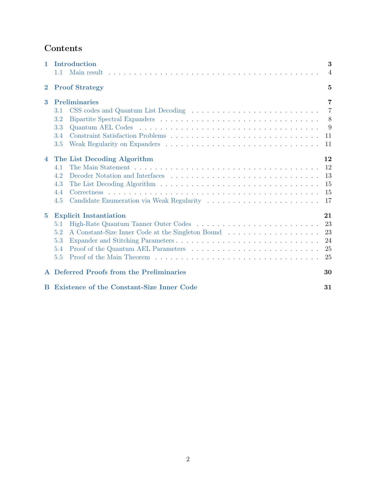
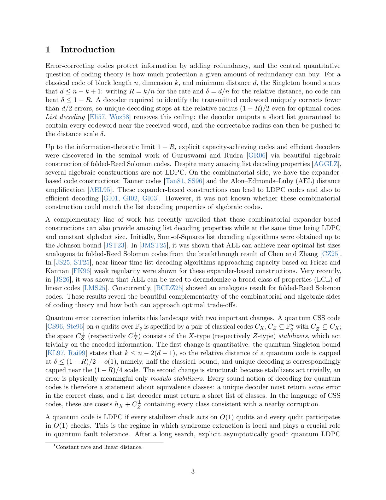
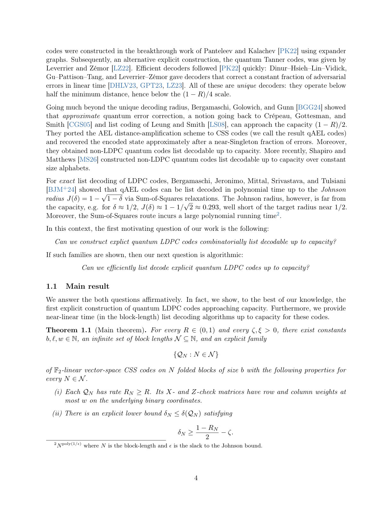
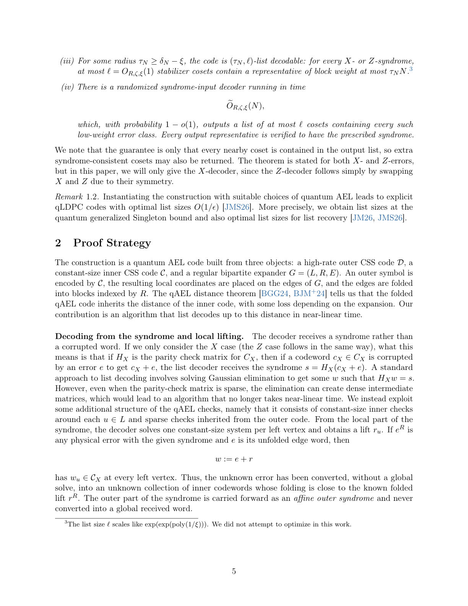
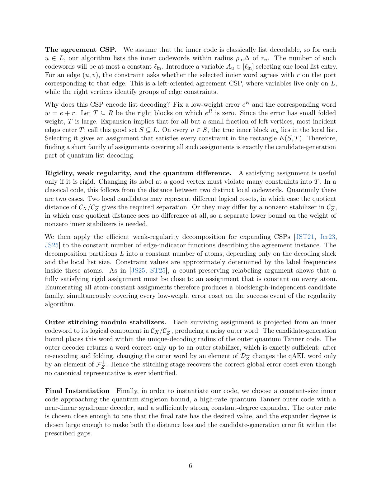
Summary. This paper presents the first explicit construction of quantum LDPC codes that achieve list decoding capacity. The codes are built using expander graphs via quantum AEL amplification, and the authors develop a corresponding near-linear time decoding algorithm. This advances the field by providing highly structured, efficient quantum error-correcting codes.
Why it may be interesting. This work pushes the boundaries of quantum error correction by combining the desirable LDPC structure with capacity-achieving list decoding guarantees, which is crucial for practical quantum computation.
Main problem. To construct explicit quantum Low-Density Parity-Check (LDPC) codes that achieve list decoding capacity and are decodable in near-linear time.
Main result. The authors provide the first explicit construction of such quantum LDPC codes, achieving a list decoding radius approaching the quantum Singleton bound with constant list sizes.
Method. The construction utilizes expander graphs via the quantum analogue of Alon-Edmonds-Luby (AEL) amplification, and the decoding algorithm generalizes classical weak-regularity list decoding techniques.
Model / system. The work operates in the framework of quantum error correction, specifically constructing CSS codes defined over finite fields, which are characterized by their LDPC structure.
Key observables. List decoding radius ($ au_N$), code rate ($R_N$), list size ($\ell$), and decoding time complexity.
Important parameters / regimes. Block length ($N$), list size ($\ell = O(1/\epsilon)$), and the required rate $R$.
Assumptions / limitations. The analysis relies on the existence of suitable expander graphs and the ability to solve local Constraint Satisfaction Problems (CSPs) efficiently.
Paper structure. The paper builds from the general problem statement to the explicit construction using qAEL codes, followed by the development of a near-linear time decoding algorithm based on solving local CSPs and outer stitching.
In classical coding theory, the quest for explicit codes achieving list decoding capacity has been an important driving force. While random codes are easily shown to achieve capacity, an explicit construction was only discovered decades later in the seminal work [Guruswami and Rudra, STOC 2006]. In quantum coding theory, it is highly desirable that a code family be LDPC. While good quantum codes were known for decades, obtaining the additional LDPC property was elusive. In fact, only very recently that good quantum LDPC codes were discovered in a breakthrough work [Panteleev and Kalachev, STOC 2022]. In this context, a natural question is to ask for an explicit family of quantum codes achieving list decoding capacity while also possessing the important LDPC property. In this work, we provide (to the best of our knowledge) the first explicit constructions of quantum LDPC codes achieving list decoding capacity, namely, with a list decoding radius approaching the quantum Singleton bound with constant list sizes. Furthermore, we provide near-linear time (in the block-length) list decoding algorithms approaching capacity. Our explicit code construction are based on expander graphs via the quantum analogue of Alon-Edmonds-Luby (AEL) amplification [Bergamaschi, Golowich and Gunn, STOC 2024], and this enables the important LDPC property. Our efficient list decoding algorithms are obtained by generalizing the classical expander-based weak-regularity list decoding algorithms [Srivastava and Tulsiani, FOCS 2025] [Jeronimo and Singh, 2025] to suitable instantiations of quantum AEL.
Authors: Haoyu Wang, Pei Wu, Guangxu Yang
Type: theory · Category: quantum information and computing · PDF: https://arxiv.org/pdf/2609.40273v1
Analysis basis: full PDF text, analyzed in chunks
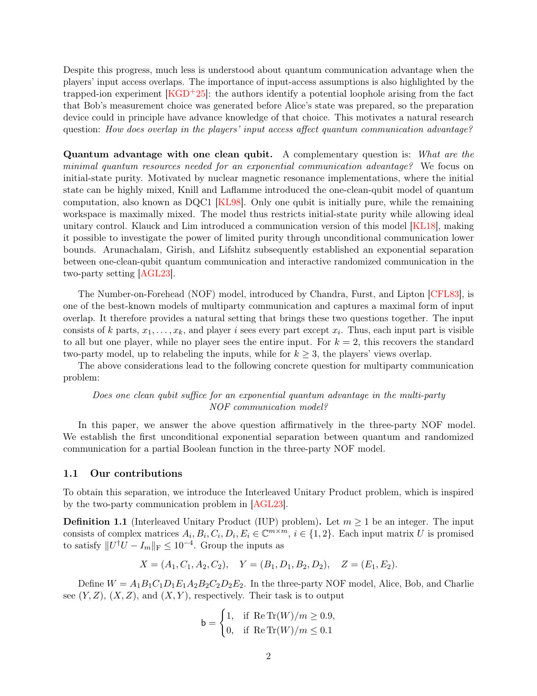
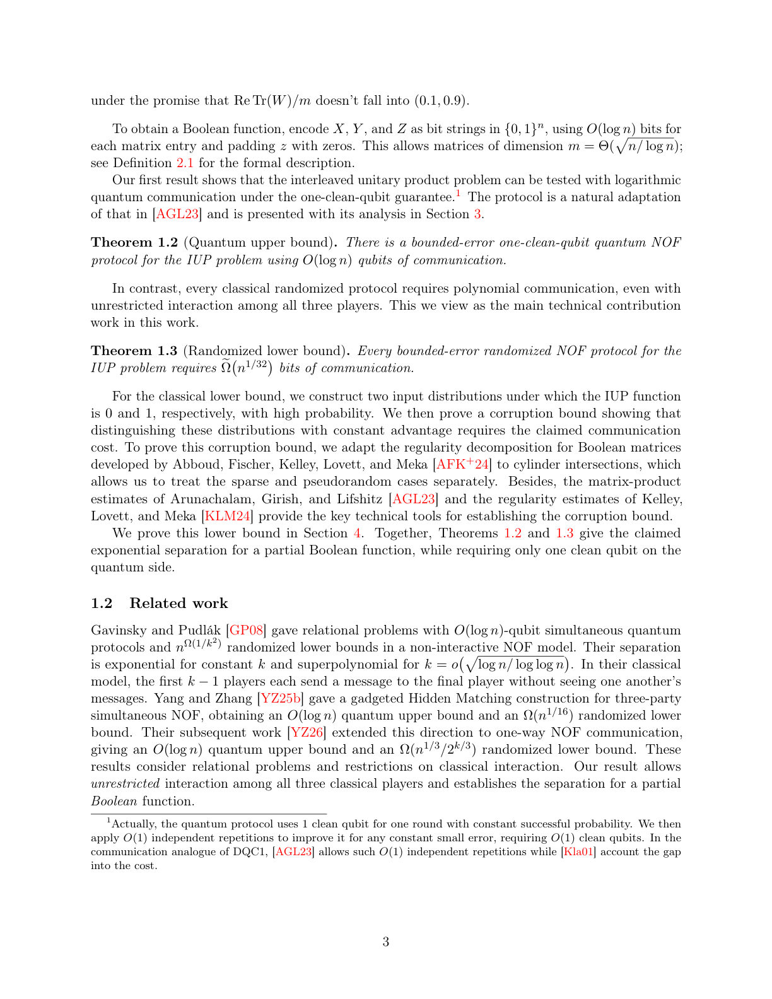
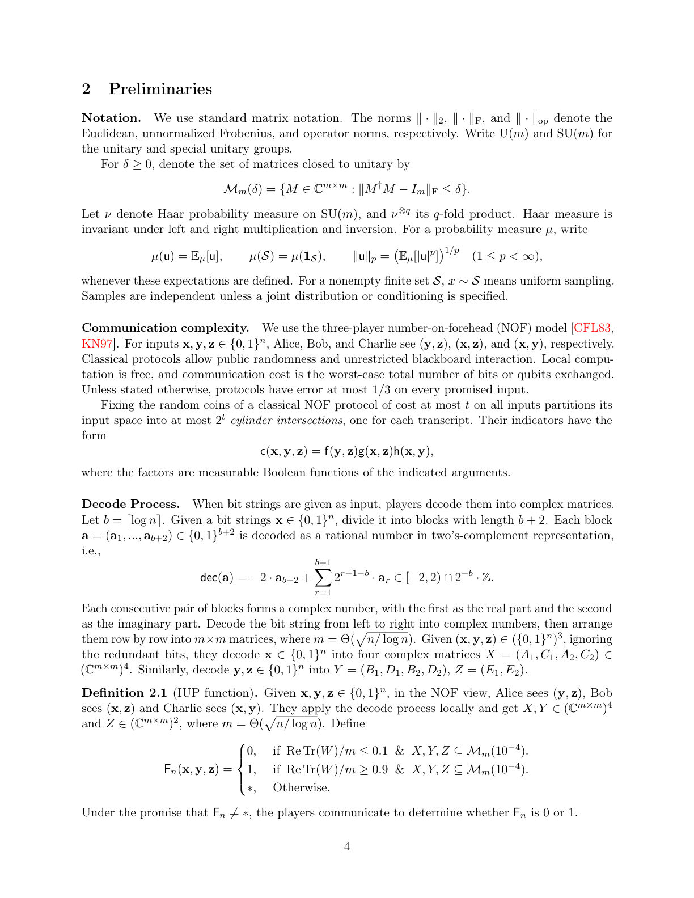
Summary. This paper proves an exponential quantum advantage for a specific decision problem (IUP) in the three-party Numbers-on-Forehead communication model. It achieves this by constructing a quantum protocol requiring only logarithmic qubits, while simultaneously proving a significantly higher lower bound for classical communication using advanced regularity methods. This advances the understanding of quantum communication complexity in multi-party settings.
Why it may be interesting. This work pushes the boundary of quantum communication complexity theory by providing a concrete, exponentially separated advantage in a complex, multi-party setting, which has implications for quantum cryptography and distributed quantum computation.
Main problem. To establish the first exponential quantum advantage in the general interactive three-party Numbers-on-Forehead (NOF) model for a decision problem.
Main result. The authors achieve an exponential separation for the Interleaved Unitary Product (IUP) problem, showing an $O(\log n)$ quantum communication requirement versus $\Omega(n^{1/32})$ classical communication.
Method. The separation is achieved by combining a quantum upper bound protocol and a novel regularity-based argument for randomized classical lower bounds, adapting advanced decomposition techniques.
Model / system. The model is the three-party Numbers-on-Forehead (NOF) communication setting, applied to the Interleaved Unitary Product (IUP) problem. The quantum protocol operates in the one-clean-qubit communication model.
Key observables. The communication complexity (qubits vs. bits) required to solve the IUP function, and the expectation values related to unitary products.
Important parameters / regimes. The input size $n$, the communication complexity $O(\log n)$ (quantum) vs. $\Omega(n^{1/32})$ (classical), and the dimension $m$ of the underlying matrices.
Assumptions / limitations. The quantum protocol assumes the one-clean-qubit model. The lower bound relies on advanced regularity decomposition techniques and the ability to approximate measurable cylinder intersections.
Figures summary. Not specified in the notes, but the structure suggests proofs involving bounds on expectations and decomposition procedures.
Paper structure. The paper builds by first defining the problem (IUP in 3-party NOF), then establishing the quantum upper bound using controlled operations, and finally deriving the classical lower bound using regularity decomposition arguments adapted from prior work.
We give the first exponential quantum advantage in the general interactive three-party Numbers-on-Forehead (NOF) model for a decision problem. Previous separations hold only for restricted protocols like one-way communication for a relation. We construct an explicit partial Boolean function, the Interleaved Unitary Product problem, that requires only $O(\log n)$ NOF quantum communication but $\widetildeΩ(n^{1/32})$ randomized communication. This function builds on the two-party unitary product problem of Arunachalam, Girish, and Lifshitz (TQC 2024). The main technical obstacle is that discrepancy, the standard lower-bound method for NOF, also lower-bounds quantum communication. We instead develop a regularity-based argument for randomized NOF lower bounds, building on the approach of Kelley, Lovett, and Meka and adapting the regularity decomposition of Abboud, Fischer, Kelley, Lovett, and Meka (STOC 2024) to cylinder intersections. Combined with matrix-product estimates of Arunachalam, Girish, and Lifshitz, this yields our randomized lower bound.
Authors: Robin Kothari, Tony Metger, Ryan O'Donnell, Noah Shutty, Kewen Wu
Type: theory · Category: quantum information and computing · PDF: https://arxiv.org/pdf/2609.40321v1
Analysis basis: full PDF text, analyzed in chunks
Summary. This paper investigates the computational hardness of the $\mathbb{F}_3^n$-Subset-Sum problem and Binary-Error LWE, establishing new quantum algorithms that suggest an exponential quantum advantage for certain parameter regimes. It also provides improved deterministic classical algorithms for these problems, advancing the understanding of the sample-time tradeoff in lattice-based cryptography.
Why it may be interesting. While the topic is cryptography/QIP, the rigorous analysis of computational thresholds and the explicit comparison of quantum vs. classical scaling laws are highly relevant to understanding the limits of quantum computation.
Main problem. The paper analyzes the computational difficulty of the $\mathbb{F}_3^n$-Subset-Sum problem and the related Binary-Error Learning-with-Errors (LWE) problem.
Main result. The authors present quantum algorithms suggesting an exponential quantum speedup for Subset-Sum when the number of vectors $m$ is small relative to $n^2$, and they establish deterministic classical algorithms for LWE.
Method. The work combines quantum algorithm design, rigorous analysis of sample-time tradeoffs, and the application of advanced algebraic techniques like Degree-3 XL attacks.
Model / system. The analysis is purely computational, focusing on algebraic problems defined over finite fields ($\mathbb{F}_3$ and $\mathbb{F}_q$). The underlying structure relates to lattice problems and cryptographic hardness assumptions.
Key observables. The primary observables are the required number of input vectors ($m$) relative to the dimension ($n$) needed to solve the problem efficiently.
Important parameters / regimes. The critical parameters are the field size (3 or $q$), the dimension $n$, and the ratio $m/n$ which determines the complexity regime.
Assumptions / limitations. The analysis relies on establishing sample-time tradeoffs, some of which are noted to depend on unproven regularity assumptions, and the quantum speedup claims are conditional on these algorithmic breakthroughs.
Figures summary. No specific figure summaries were extracted, but the notes detail comparisons between quantum, classical, and previous state-of-the-art bounds for various parameter regimes.
Paper structure. The paper is structured around comparing the quantum and classical complexity bounds for Subset-Sum and LWE. It moves from general theoretical results (Theorem 1.3) to specific deterministic classical attacks (Theorem 1.7) and concludes with phase transition analysis using probability inequalities.
We study vector subset sum over $\mathbb{F}_3^n$: given $m$ random vectors from $\mathbb{F}_3^n$, find a nonempty subset that sums to zero; the smaller $m$, the more difficult it is to find such a subset. Chen, Liu, and Zhandry (EUROCRYPT'22) introduced an efficient quantum algorithm that solves this problem when $m\approx n^2/2$, where a naive classical algorithm would require exponential time. Subsequently, Kothari, O'Donnell, and Wu (STOC'2026) gave an efficient classical algorithm that only requires $m \approx n^2/3$ vectors, thus removing the hope for an exponential quantum advantage in this parameter regime. Using the framework of Chen, Liu, and Zhandry, we give quantum algorithms that require much fewer input vectors, renewing the possibility of an exponential quantum speedup: for any fixed $ε>0$, our quantum algorithm solves $\mathbb{F}_3$-subset sum in polynomial time with $m=ε\cdot n^2$ vectors. More generally, we establish a full sample--time tradeoff that interpolates between exponential and polynomial runtime. The main ingredient is a deterministic classical algorithm for the binary-error Learning-with-Errors problem, which is of independent cryptographic interest. For this, we rigorously establish a sample--time tradeoff that was predicted by earlier algebraic heuristics. For vector subset sums over larger fields, we also significantly improve classical algorithms in Kothari, O'Donnell, and Wu (STOC'2026).
Authors: Marten Folkertsma, Ian Mertz, Sergii Strelchuk, Sathyawageeswar Subramanian
Type: theory · Category: quantum information and computing · PDF: https://arxiv.org/pdf/2609.40144v1
Analysis basis: full PDF text, analyzed in chunks
Summary. This paper demonstrates that the computational depth of Clifford circuits can be maintained at an optimal $O(\log n)$ scaling even when using only 'catalytic' qubits instead of clean ancillas. By employing algebraic cancellation techniques, the authors show that this catalytic memory approach is sufficient for implementing complex quantum operations efficiently. This advances the understanding of resource trade-offs in quantum circuit design.
Why it may be interesting. This work provides a powerful theoretical tool for resource-constrained quantum computation, showing how to achieve optimal depth scaling without requiring perfect, clean quantum memory.
Main problem. The paper investigates replacing the need for clean (known initial state) ancillary qubits in quantum circuits with 'catalytic' qubits, which must have their joint state restored at the end of the computation.
Main result. They show that every $n$-qubit Clifford circuit can be implemented catalytically with depth $O(\log n)$ using $O(n^2 / \log^2 n)$ catalytic qubits, matching the best achievable depth.
Method. The authors use algebraic cancellation techniques, building on the Clifford normal form, to eliminate the dependence on the unknown initial state of the catalytic qubits.
Model / system. The study focuses on quantum circuits, specifically Clifford circuits and diagonal unitaries belonging to the Clifford hierarchy ($C_k$). The model distinguishes between clean ancillas (starting in $|0 angle$) and catalytic ancillas (starting in an arbitrary state $| au angle$).
Key observables. Depth of the circuit (e.g., $O(\log n)$), required number of catalytic qubits (e.g., $O(n^2 / \log^2 n)$), and the absence of clean qubits.
Important parameters / regimes. Number of qubits ($n$), the level of the Clifford hierarchy ($k$), and the depth scaling factor ($\log n$).
Assumptions / limitations. The results are established for Clifford and semi-Clifford circuits; the conjecture for general quantum circuits remains open.
Paper structure. The paper progresses by first establishing the catalytic implementation for general Clifford circuits, then extending the technique to diagonal elements of the Clifford hierarchy, and finally addressing semi-Clifford gates, always aiming to maintain logarithmic depth scaling.
Additional qubits can reduce the depth of a quantum circuit by providing workspace for parallel computation, but standard constructions assume that this workspace is initialized in a known state. In this work we study catalytic implementations, i.e. asking whether dirty qubits can instead be used provided that their joint state including any entanglement with other registers is restored exactly at the end of the computation. We show that every $n$-qubit Clifford circuit has a catalytic implementation of depth $O(\log n)$ using $O(n^2/\log^2 n)$ catalytic qubits and no clean qubits, matching the asymptotic depth achievable when clean workspace is available. We extend this approach to diagonal elements of any fixed level $C_k$ of the Clifford hierarchy, which admit catalytic implementations of depth $O(\log(n+1))$ with $O(n^k/\log(n))$ gates and $O(n^k/\log^2(n))$ catalytic qubits, as well as to semi-Clifford Gates.
Authors: Jernej Rudi Finžgar, Martin Leib, Elisabeth Wybo
Type: theory · Category: quantum information and computing · PDF: https://arxiv.org/pdf/2609.39922v1
Analysis basis: full PDF text, analyzed in chunks
Summary. This work analyzes the fault-tolerant resource cost of running shallow QAOA circuits on structured optimization problems. By employing small-angle rotation synthesis, the required non-Clifford gate cost is significantly reduced to $eO(n^2)$. This analysis confirms the exponential quantum speedup while providing critical resource estimates necessary for hardware implementation.
Why it may be interesting. It provides concrete, resource-aware estimates for running quantum algorithms on near-term, noisy hardware, which is crucial for designing feasible quantum simulations or quantum advantage demonstrations.
Main problem. The paper determines the fault-tolerant resource cost required to execute shallow Quantum Approximate Optimization Algorithm (QAOA) circuits for solving near-symmetric optimization problems.
Main result. Small-angle synthesis reduces the non-Clifford gate cost per circuit to $eO(n^2)$, enabling the study of larger problems while maintaining an exponential speedup over classical solvers.
Method. The analysis uses small-angle Clifford+T rotation synthesis and compares resource scaling across different circuit decomposition methods (quasi-probability vs. probability mixture).
Model / system. The model is fault-tolerant quantum computation implemented on a surface-code-based architecture, using QAOA circuits to solve constraint satisfaction problems.
Key observables. Success Probability ($\Omega(1)$), Non-Clifford Cost ($eO(n^2)$), Degree-one Fourier coefficients ($h_i$).
Important parameters / regimes. Locality ($\ell$), Sparsification fraction ($f$), Phase-matched angle ($\gamma = \Theta(n^{1-\ell})$), Time limit (one-hour cap).
Assumptions / limitations. The analysis assumes a surface-code-based fault-tolerant architecture and relies on the small-angle approximation holding true.
Figures summary. Figure 1 illustrates the cost reduction from the value-oracle model to the explicit clause list, showing the $eO(n^2)$ cost. Figure 2 compares the scaling of the non-Clifford cost for different QAOA depths and synthesis conventions.
Paper structure. The paper builds from establishing the empirical speedup of low-depth QAOA, derives the small-angle scaling required for success, calculates the resulting fault-tolerant gate cost using advanced synthesis techniques, and finally discusses resource limitations imposed by hardware constraints.
Montanaro and Zhou proved that depth-one Quantum Approximate Optimization Algorithm (QAOA) finds the planted solution of certain near-symmetric constraint satisfaction problems with probability $Ω(1)$, and observed exponential runtimes for general-purpose classical solvers on explicit realizations, providing strong evidence of an empirical exponential speedup of low-depth QAOA. We ask what such a circuit costs fault-tolerantly. Although the cost Hamiltonian carries $Θ(n^\ell)$ clauses, the rotation angle at which QAOA succeeds shrinks as $n^{1-\ell}$, and we show that small-angle Clifford$+T$ rotation synthesis reduces the non-Clifford cost per circuit to $\widetilde O(n^2)$ for every clause locality $\ell$. Compiling the circuit, however, requires the explicit clause list. We find that the mechanism underlying constant QAOA success fixes the degree-one Fourier coefficients of the cost, whose signs reveal the planted solution. However, this leakage need not reveal the solution: we design families in which the quadratic non-Clifford scaling and hard exact optimization coexist.
Authors: Fernando Granha Jeronimo, Xiaojuan Ma, Nikhil Shagrithaya
Type: theory · Category: quantum information and computing · PDF: https://arxiv.org/pdf/2609.40252v1
Analysis basis: full PDF text, analyzed in chunks
Summary. This paper tackles the challenge of finding explicit quantum error-correcting codes that achieve the optimal performance bounds known for random quantum codes. By developing a quantum version of the LCL framework, the authors establish theoretical thresholds and provide concrete, explicit constructions for quantum list-decodable and list-recoverable codes. These resulting codes are all of the desirable qLDPC type.
Why it may be interesting. This work provides a rigorous mathematical bridge between the theoretical existence of optimal quantum codes (random codes) and the practical requirement of having explicit, structured codes (qLDPC codes), which is crucial for building physical quantum hardware.
Main problem. The central goal is to construct explicit quantum error-correcting codes, specifically qLDPC codes, whose optimal properties match those of theoretically ideal random quantum codes.
Main result. The authors provide explicit constructions for quantum list-decodable and list-recoverable codes with optimal list sizes, all of which are proven to be qLDPC codes.
Method. They develop a quantum analogue of the Local Coordinate-wise Linear (LCL) framework for nested quantum spaces, adapting the Alon–Edmonds–Luby (AEL) local-to-global paradigm to derandomize theoretical guarantees into concrete constructions.
Model / system. The work focuses on quantum error correction codes, particularly CSS quantum codes, analyzed using the qLCL framework for nested subspaces $S \subseteq C$. The underlying structure involves stabilizer codes and their logical quotients.
Key observables. Code parameters (rate, distance, list sizes), quantum ranks (physical vs. logical), and threshold values for decoding.
Important parameters / regimes. The construction depends on achieving optimal list sizes and maintaining the qLDPC structure, relating to the rate $R$ and error parameters $ ho$.
Assumptions / limitations. The theory relies on adapting classical coding-theoretic tools (like LCL witnesses) to the quantum setting, and the final constructions assume the existence of explicit outer CSS families with desired properties.
Paper structure. The paper builds theory by introducing the quantum-LCL framework, deriving threshold theorems for random CSS codes, defining quantum subspace designs, and culminating in explicit constructions for various quantum list-decodable/recoverable properties.
Constructing explicit codes matching the parameters of random codes has been a central and largely elusive question in coding theory. The quantum setting is even more challenging since it is highly desirable that the quantum code be an LDPC code. Local coordinate-wise linear (LCL) [Levi, Mosheiff, and Shagrithaya, FOCS 2025] witnesses provide a unifying language for many coding-theoretic properties, from distance to list decoding and list recovery. In particular, it provides a framework to study properties of random linear codes, which achieve optimal parameters for many properties of linear codes. For CSS quantum codes, however, a local witness has two distinct ranks: its physical rank before quotienting by stabilizers and its logical rank after quotienting. We develop a quantum version of the LCL framework for nested spaces $S \subseteq C$, in which local constraints are imposed on physical representatives while independence is measured in the logical quotient $C/S$. The resulting theory gives a threshold theorem for random CSS codes, and as a consequence shows that the per-sector rate threshold is equal to the classical rate threshold. We also define a quantum analogue of subspace design [Guruswami and Xing, STOC 2013] and show that they can be described in a natural manner within the quantum-LCL framework. Finally, we give explicit constructions for arbitrary folded quantum-LCL properties, in a manner similar to the LCL derandomization of [Jeronimo and Shagrithaya, STOC 2026]. As a consequence, we obtain the first explicit constructions of quantum list-decodable codes and list-recoverable codes that have optimal list sizes, in addition to explicit quantum subspace design codes. We note that all our explicit constructions are qLDPC codes, an important property for quantum error-correcting codes.
Authors: Cheng-Lin Hong, Emiel Koridon, Paul K. Faehrmann, Thomas D. Kühne, Stefano Polla, Werner Dobrautz
Type: theory · Category: strongly correlated electrons · PDF: https://arxiv.org/pdf/2609.39452v1
Analysis basis: full PDF text, analyzed in chunks

Summary. This work analyzes the computational trade-off for quantum algorithms applied to Hamiltonians derived using the Transcorrelated (TC) method for electronic structure. By showing that the TC method accelerates basis convergence, the authors demonstrate a potential polynomial improvement in the required quantum query complexity. This establishes a crucial framework for assessing the resource cost of highly accurate correlated quantum simulations.
Why it may be interesting. It provides a rigorous theoretical framework for quantifying the computational cost associated with achieving high accuracy in correlated electronic structure calculations, directly linking physical approximations (TC method) to quantum algorithmic resource requirements.
Main problem. The paper addresses the accuracy-cost trade-offs when applying quantum algorithms to non-Hermitian Hamiltonians derived from the Transcorrelated (TC) method.
Main result. The TC method significantly improves basis convergence rates (e.g., from $N^{-1/2}$ to $N^{-3/2}$), which can translate to a polynomial improvement in the asymptotic query-complexity upper bound for quantum algorithms.
Method. The analysis involves studying the spectral properties and convergence rates of the projected TC Hamiltonian, comparing it to the bare projection, and using diagnostics like eigenvector conditioning.
Model / system. The system models electronic structure calculations where the electron-electron Coulomb singularity causes wavefunction cusp structure. The Hamiltonian is transformed into a non-Hermitian, non-normal TC Hamiltonian via a Jastrow factor.
Key observables. Basis-set convergence rates ($N^{-1/2}$ vs $N^{-3/2}$), eigenvector conditioning ($\kappa(V)$), eigenvalue sensitivity, and asymptotic query-complexity bounds.
Important parameters / regimes. Basis size ($N$), Jastrow correlator parameters ($ heta$ or $\mu$), and the degree of non-normality.
Assumptions / limitations. The analysis relies on studying a solvable model first, then extending to second-quantized Hamiltonians, and assumes the applicability of quantum algorithms sensitive to non-normality.
Figures summary. Figure 14 illustrates basis convergence for TC-exp and TC-erfc showing $N^{-3/2}$ and $N^{-5/2}$ slopes, while Figure 15 compares published and re-computed condition numbers for qubit Hamiltonians.
Paper structure. The paper first analyzes a solvable model to isolate convergence and conditioning effects, and then extends the framework to analyze full second-quantized electronic-structure Hamiltonians.
The electron--electron Coulomb singularity forces cusp structure in electronic wavefunctions. This cusp structure limits wavefunction regularity and slows the convergence of expansions in smooth bases, requiring large basis sets to reach a target accuracy. The transcorrelated (TC) method incorporates this short-range behavior into the Hamiltonian, thereby improving the regularity of the transformed wavefunction and accelerating convergence toward the complete-basis-set limit. The resulting Hamiltonian is non-Hermitian and non-normal, which limits the direct applicability of standard quantum algorithms. For such non-normal operators, the complexity of several recent quantum algorithms depends explicitly on quantities related to eigenvector conditioning and eigenvalue sensitivity. Understanding these quantities is essential for assessing both algorithmic complexity and quantum resource requirements. In this work, we address these issues in two stages. We first study a solvable model, which provides a controlled setting for isolating how transcorrelation affects basis convergence and eigenvector conditioning. Within this setting, we investigate two distinct one-parameter Jastrow correlators. We derive the asymptotic energy-error scaling: $N^{-1/2}$ for the bare projection and $N^{-3/2}$ for both TC correlators at generic fixed parameters, with $N$denoting the basis size. Furthermore, we show that this faster convergence can yield a polynomial improvement in the asymptotic query-complexity upper bound. We then extend the analysis to second-quantized electronic-structure Hamiltonians and use particle-number-sector diagnostics to distinguish target-sector from auxiliary-sector conditioning. Our work provides a framework for understanding the central accuracy--cost trade-off in TC Hamiltonians.
Authors: Amin Shiraz Gilani, François Le Gall, Xingyu Zhou
Type: theory · Category: quantum information and computing · PDF: https://arxiv.org/pdf/2609.40180v1
Analysis basis: full PDF text, analyzed in chunks
Summary. This paper tackles the open problem of finding the quantum query complexity for Boolean Matrix Product Verification. By relating it to the Orthogonal Vectors problem, the authors derive a new upper bound of $\widetilde O(n^{17/12})$ and improve the lower bound to $\Omega(n^{5/4})$. These results provide significant theoretical advances in understanding the computational power of quantum oracles.
Why it may be interesting. While focused on query complexity, the techniques involving quantum walks and establishing separations between different computational tasks are fundamental tools applicable to understanding resource limitations in quantum simulation or quantum networking protocols.
Main problem. The paper determines the quantum query complexity bounds for Boolean Matrix Product Verification (BMPV) and related problems like Orthogonal Vectors (OV).
Main result. They established the first non-trivial upper bound for BMPV at $\widetilde O(n^{17/12})$ and a new lower bound of $\Omega(n^{5/4})$, achieving a polynomial separation between the complexities of checking graph radius vs. diameter.
Method. The methodology involves establishing deep connections between BMPV and the OV problem, utilizing quantum walk algorithms, and employing advanced techniques like surjectivity lower bounds and adversary composition.
Model / system. The analysis is conducted within the quantum query complexity model, where the computational resource is the number of times an oracle (accessing matrix entries) can be queried.
Key observables. Quantum query complexity $Q(\cdot)$ for problems like BMPV, OV, and graph properties (Radius/Diameter).
Important parameters / regimes. Matrix size $n$; the exponents $17/12$ and $5/4$ define the asymptotic complexity.
Assumptions / limitations. The analysis relies on various assumptions regarding the structure of the input lists (e.g., intersection promise) which are systematically removed to derive the general bounds.
Figures summary. Figure 1 summarizes the derived query bounds and the relationships between the complexities of OV, BMPV, BMPRS, and graph properties (DIAM/RAD).
Paper structure. The paper progresses by first relating BMPV to OV, deriving the lower bound for OV using surjectivity arguments, and then developing a complex quantum walk algorithm to establish the upper bound for OV, which is then generalized to BMPV.
We prove the first non-trivial upper bound for the quantum query complexity of Boolean Matrix Product Verification ($\mathsf{BMPV}$), answering a longstanding open question in quantum query complexity. For $n\times n$ matrices, our upper bound is $\widetilde O(n^{17/12})$, improving on the standard $O(n^{3/2})$ bound obtained using Grover search by Buhrman and Špalek (SODA 2006). We complement this result by showing an $Ω(n^{5/4})$ lower bound, which improves over the previous best known lower bound of $\widetildeΩ(n^{19/18})$ by Childs, Kimmel, and Kothari (ESA 2012). Our approach centers on a connection with Orthogonal Vectors ($\mathsf{OV}$), which asks whether an indexed list of $n$ Boolean vectors of dimension $n$ contains two vectors with disjoint supports. In particular, we prove equivalences between $\mathsf{OV}$ and $\mathsf{BMPV}$ and establish the above bounds for $\mathsf{OV}$. We also prove a tight $\widetilde Θ(n^{3/2})$ bound for a variant of $\mathsf{BMPV}$ that asks whether the product contains a given row vector. Together, these results imply a polynomial separation between the quantum query complexities of deciding whether a graph has radius at most two and whether it has diameter at most two.
Authors: Srinivasan Arunachalam, Qizhao Huang, Makrand Sinha
Type: theory · Category: quantum information and computing · PDF: https://arxiv.org/pdf/2609.39821v1
Analysis basis: full PDF text, analyzed in chunks
Summary. This paper develops an efficient algorithm to reconstruct an unknown random quantum circuit by analyzing the output state. It shows that learning is possible in polynomial time when the product of gate locality and circuit depth scales logarithmically with the system size. The breakthrough relies on a novel anticoncentration inequality, clarifying the boundary between learnable and pseudorandom quantum circuits.
Why it may be interesting. For a theoretical physicist, this work provides a concrete, quantifiable link between the complexity of quantum information processing (learnability) and fundamental concepts in random matrix theory and quantum chaos (pseudorandomness thresholds).
Main problem. The paper addresses the fundamental problem of learning an unknown random quantum circuit $U$ given only access to copies of the output state $|\psi_0 angle = U|0 angle^{\otimes n}$. This is intrinsically linked to understanding the threshold for quantum state pseudorandomness.
Main result. The authors provide an efficient algorithm that can recover the original circuit $U$ in polynomial time if the product of gate locality ($\ell$) and circuit depth ($d$) satisfies $\ell d = O(\log n)$.
Method. The core method involves a local correlation criterion that tests candidate gates by analyzing the two-point correlation function between sites that would become disconnected if the candidate gate were incorrect. This relies on a Carbery-Wright type anticoncentration inequality.
Model / system. The model consists of local random quantum circuits applied to $n$ sites arranged on a fixed-dimensional brickwork lattice. The gates are sampled independently from the Haar measure.
Key observables. The two-point correlation function $ ext{Corr}_{B:D}( ho)$, which measures the deviation of the state $ ho$ from a product state, is the key diagnostic tool.
Important parameters / regimes. The critical scaling parameter is $\ell d$, where $\ell$ is gate locality and $d$ is circuit depth. The threshold for pseudorandomness is $\ell d = \omega(\log n)$.
Assumptions / limitations. The analysis assumes the circuit is random and that the required state access (copies of the output state) is available. The technical machinery relies on the dimension-independent anticoncentration inequality.
Figures summary. Figure 1.1 illustrates the learning algorithm on 1D, contrasting the intersection of backward lightcones (when a gate is present) versus disjoint lightcones (when a gate is removed).
Paper structure. The paper first establishes the learning result using the local correlation criterion, which is underpinned by a key technical ingredient: a dimension-free anticoncentration inequality for polynomials of Haar random unitaries. The structure moves from the general learning guarantee to the specific mathematical tool required.
We give an efficient algorithm for learning $k$-dimensional brickwork random quantum circuits using only copies of the output state obtained by applying $U$ to the all-zero input. For a depth-$d$ circuit on $n$ sites with random $2\ell$-qubit gates, the algorithm learns the original circuit $U$ with high probability in $\text{poly}(n,2^{\ell d})$ time for every constant dimensional lattice. In particular, the algorithm is polynomial time as long as $\ell d = O(\log n)$. In one dimension, this reaches the natural boundary suggested by pseudorandomness: pseudorandom states require $\ell d=ω(\log n)$, and structured cryptographic constructions suggest that this scale may be achievable from above. In higher dimensions, it remains plausible that the same $\ell d=ω(\log n)$ scale remains the threshold for ancilla-free pseudorandomness, and our results help clarify the conditions under which pseudorandomness can arise in this setting. The main idea behind our algorithm is a local correlation criterion that identifies gates in the final layer without learning their entire backward light cones, avoiding a bottleneck in the previous approaches. A key technical ingredient is a Carbery-Wright type anticoncentration inequality for low-degree polynomials of Haar random unitaries whose small-ball exponent is independent of the matrix dimension. The dimension-independent exponent is crucial for handling gates of growing locality. This anticoncentration result may also be of independent interest.
Authors: Xianzhi Pan, Zhijie Fan, Youjin Deng
Type: theory · Category: statistical mechanics · PDF: https://arxiv.org/pdf/2609.39267v1
Analysis basis: full PDF text, analyzed in chunks
Summary. This work analyzes the 2D XY model with long-range interactions, determining that the marginal case $\sigma=2$ leads to a unique Logarithmic Quasi-Long-Range Order (log-QLRO) phase. By combining advanced RG techniques and simulations, the authors establish $\sigma=2$ as a critical crossover point, invalidating simpler theoretical assumptions about the stability of the system's universality class.
Why it may be interesting. The study provides a detailed, non-trivial example of how long-range interactions can fundamentally alter critical behavior, leading to a novel phase transition mechanism beyond established paradigms like BKT.
Main problem. The paper investigates the phase diagram and critical properties of the two-dimensional XY model when the interaction decays as $1/r^{2+\sigma}$, focusing specifically on the marginal case $\sigma=2$.
Main result. At $\sigma=2$, the system exhibits a novel Logarithmic Quasi-Long-Range Order (log-QLRO) phase, which establishes $\sigma=2$ as a critical crossover boundary separating true long-range and short-range universality classes.
Method. The analysis combines near-exact Gaussian spin-wave theory, adiabatic renormalization-group (RG) analysis, and large-scale Monte Carlo simulations.
Model / system. The system is the two-dimensional classical XY model governed by a Hamiltonian incorporating long-range interactions $J_{LR}(r) \propto 1/r^{2+\sigma}$. The effective low-energy physics is described by a momentum-space stiffness kernel $\gamma(k)$.
Key observables. Spin correlation function $C(r)$, correlation-length exponent $ u$, and the logarithmic decay exponent $\eta_\ell$.
Important parameters / regimes. The interaction decay parameter $\sigma$, with special focus on the marginal case $\sigma=2$.
Assumptions / limitations. The analysis relies on the Gaussian spin-wave approximation and the adiabatic approximation within the RG framework.
Figures summary. The notes mention Figure 1 schematically showing RG flows in $(K, y)$ planes, illustrating the critical separatrix and the location of the log-QLRO phase.
Paper structure. The paper systematically analyzes the system across three regimes defined by $\sigma$: $\sigma>2$ (algebraic QLRO), $0<\sigma<2$ (true LRO), and the critical $\sigma=2$ (log-QLRO), using theoretical derivations and numerical validation.
We investigate the phase diagram and critical properties of the two-dimensional classical XY model with interactions decaying as $1/r^{2+σ}$. At the marginal case $σ=2$, we show that the low-temperature phase is characterized by logarithmic quasi-long-range order (log-QLRO), where spin correlations decay as a power of the logarithm of distance, $C(r)\sim(\ln r)^{-η_\ell}$ with $η_\ell\propto T$, and that the transition into this phase is a continuous transition beyond both the Ginzburg-Landau-Wilson paradigm and the Berezinskii-Kosterlitz-Thouless mechanism. Our analysis combines a near-exact Gaussian spin-wave theory, an adiabatic renormalization-group analysis, and large-scale Monte Carlo simulations. We find that the $1/r^4$ interaction logarithmically modifies the spin-wave stiffness kernel as $γ(k)\simeqκk^2\ln(1/k)$, which suppresses vortex proliferation and gives rise to a nonuniversal correlation-length exponent $ν\propto1/\sqrt{2πκ}$. Crucially, our simulations reveal that the short-range algebraic QLRO phase is unstable against a weak long-range perturbation for $σ\le2$. These results establish $σ=2$ as the crossover boundary between the long-range and short-range universality classes and provide a critical evaluation of recent theoretical proposals.
← Index · ← Previous · Next →